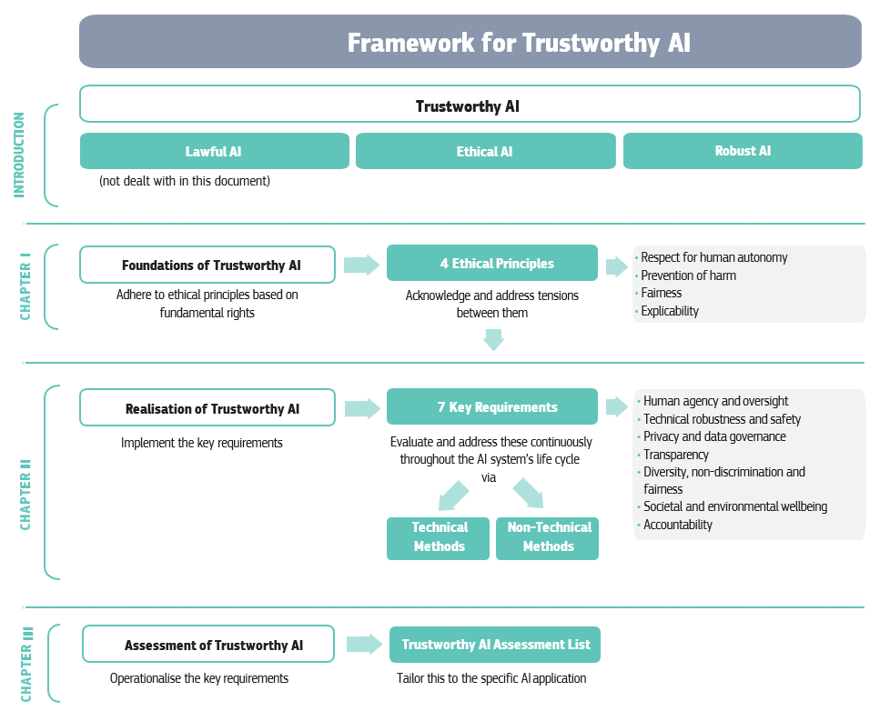

Forklarbar KI og etikk
En modell som er treffsikker, men som ingen forstår, er vanskelig å stole på, feilsøke og regulere. Her lærer du å åpne den svarte boksen med SHAP og Shapley-verdier (dytt på boksen), LIME (finn noe du forstår) og konseptdeteksjon (knus boksen), og hvilke etiske prinsipper og regler (AI Act) som gjelder når modellene tar beslutninger om mennesker.
Etter dette kapittelet skal du kunne
- forklare hvorfor forklarbarhet er viktig, og skille mellom tolkbare modeller og svarte bokser, global og lokal forklaring, og modellagnostiske og modellspesifikke metoder
- forklare forskjellen på symbolsk og subsymbolsk KI, på transparent og tolkbar, og på tolkbarhet (passiv) og forklarbarhet (aktiv)
- kjenne de tre tilnærmingene i notatene: følsomhet for input (SHAP), surrogatmodeller (LIME) og modellspesifikke forklaringer (konseptdeteksjon)
- beskrive de fem stegene i LIME, forklare de to leddene i likning 122 (etterligning $\mathcal{L}$ og kompleksitet $\Omega$) og kjenne forbeholdene
- regne ut Shapley-verdier for tre spillere for hånd (taxieksempelet og eksamen 2024 oppg. 36) og kjenne egenskapene effektivitet, symmetri, dummy og additivitet
- forklare hva $v(S)$ er for en modell, hvorfor vi trenger et bakgrunnsdatasett, og hvilken antakelse det skjuler
- velge riktig explainer (Kernel, Tree, Deep, Gradient) og lese et force plot og et beeswarm-plott: hvilken feature betyr mest, og i hvilken retning den trekker
- forklare på et overordnet nivå hva SHAP-verdier betyr for bilder (superpiksler) og tekst
- forklare data processing inequality, forskjellen på konsepter og features, hvordan en CAV lages med en lineær probe, og regne ut og tolke en TCAV-skår
- forklare de fem etiske prinsippene til Floridi og Cowls (beneficence, non-maleficence, autonomy, justice, explicability), hvor de kommer fra, og nyansene: ikke-skade ≠ velgjørenhet, meta-autonomi, justice ≠ fairness, og intelligibility vs. accountability
- gi eksempler på skjevhet og diskriminering i data
- forklare hva AI Act er rettslig (forordning, EØS, KI-loven), skillet mellom å tre i kraft og å gjelde, og hva Digital Omnibus endret
- plassere et KI-system i riktig kategori (uakseptabel, høy, begrenset, minimal, GPAI eller utenfor), og kjenne kravene i artikkel 9–15, transparenskravene og GPAI-kravene, inkludert systemisk risiko ($10^{25}$ FLOP)
15.1Hvorfor forklarbarhet?
Et dypt nevralt nett eller en random forest med 500 trær kan ha høy accuracy, men vi kan ikke lese av hvorfor den sa «avslå lånet» for akkurat denne søkeren. Forklarbar KI (explainable AI, XAI) handler om metoder som gjør slike beslutninger forståelige for mennesker.
- Tillit: leger, saksbehandlere og brukere må kunne vurdere om de skal følge modellens råd.
- Feilsøking: forklaringer avslører om modellen har lært snarveier. Et kjent eksempel er en klassifikator som skilte ulv fra husky ved å se etter snø i bakgrunnen, ikke på dyret.
- Regulering: GDPR gir rett til meningsfull informasjon om logikken bak automatiserte avgjørelser, og AI Act stiller krav om åpenhet og dokumentasjon for høyrisikosystemer.
- Rettferdighet: uten innsyn er det vanskelig å oppdage at modellen diskriminerer, for eksempel via postnummer som stedfortreder for etnisitet.
Husk husky-modellen som egentlig var en snødetektor. Den hadde høy accuracy på testsettet, fordi alle ulvebildene tilfeldigvis hadde snø. Uten forklaring hadde ingen oppdaget det. Accuracy forteller om modellen treffer, forklaringer forteller hvorfor.
Hvilke er gode grunner til å bruke forklarbarhetsmetoder?
- Oppdage at modellen bruker en uønsket snarvei i dataene.
- Øke modellens accuracy på testsettet automatisk.
- Gi en person som får avslag en begrunnelse hun kan forstå og eventuelt klage på.
- Avdekke om modellen behandler grupper urettferdig.
Fra symbolsk til subsymbolsk KI
Notatene setter problemet i historisk kontekst. Fra KI-feltet ble grunnlagt gjennom Dartmouth-prosjektet i 1956 til omtrent 1990 dominerte symbolske metoder: mennesker koder kunnskap inn i maskinen som eksplisitte regler, planer og søkeprosedyrer, med symboler som betyr noe for oss (for eksempel i ekspertsystemer). Fordi både stegene og relasjonene er skrevet av mennesker, gir de intuitivt mening.
Subsymbolsk KI vokste fram fordi symbolske systemer har notorisk vanskelig for å takle usikkerheten i den virkelige verden: varierende kontekster og persepsjon av bilder, lyd og tekst. I stedet for å skrive reglene selv lærer vi dem fra data, ved å oppdage og modellere korrelasjoner. Det er det hele dette kurset har handlet om. Det ekstreme tilfellet er nevrale nettverk, der sammenhengene ligger i parametre og aktiveringsfunksjoner og ingen struktur er tolkbar for mennesker. Kunnskapen ligger under symbolene, derav navnet.
| Symbolsk KI (ca. 1956–1990) | Subsymbolsk KI (maskinlæring) | |
|---|---|---|
| Hvor kommer reglene fra? | skrevet av mennesker | lært fra data (korrelasjoner) |
| Eksempel | ekspertsystemer, søk og planlegging | nevrale nettverk, ensembler |
| Styrke | gir mening for mennesker | håndterer usikkerhet og rå persepsjon, fungerer spektakulært godt |
| Svakhet | takler ikke den rotete virkeligheten | representasjonen er ikke tolkbar |
Subsymbolsk KI fungerer spektakulært godt. AlphaFold, som forutsier proteiners tredimensjonale struktur, var grunnlaget for halvparten av nobelprisen i kjemi i 2024. Teoretisk vet vi at nevrale nettverk er universelle funksjonsapproksimatorer: med nok nevroner kan de tilnærme enhver kontinuerlig funksjon så nøyaktig vi ønsker. Det er en formell garanti for at de kan representere en hvilken som helst sammenheng i data.
Vi vet ikke hvorfor de generaliserer
Det vi derimot ikke vet, er hvorfor store nettverk generaliserer så godt. Zhang et al. viste at vanlige nettverk kan memorere tilfeldige labels perfekt. De har altså kapasitet til ren memorering av treningsdataene (jf. overtilpasning i kapittel 7). Likevel lærer de generaliserbare mønstre, og empiriske studier tyder på at de lærer mønstre før de memorerer støy. Hvor denne evnen kommer fra, vet vi ikke.
Ali Rahimi brukte Test-of-Time-prisen på NIPS 2017 til å sammenligne maskinlæring med alkymi: systemer som styrer helsetjenester og offentlig debatt bør bygge på verifiserbar kunnskap, ikke på riktig gjetning. Yann LeCun var uenig og pekte på at vi bruker mange systemer uten en teoretisk forståelse av hvorfor de virker. Debatten lever fortsatt: hva skal vi gjøre med at vi ikke forstår våre mest avanserte KI-systemer, og trenger vi i det hele tatt å gjøre noe?
Transparent, tolkbar og forklarbar
Forklaringsproblemet er dette: et nevralt nettverk er fullstendig transparent og sporbart, siden vi kan printe hver eneste parameter og aktivering. Men det er ikke tolkbart, fordi ingen av tallene gir mening for oss eller lar oss forstå hvorfor det predikerer som det gjør.
- Tolkbarhet (interpretability) er en passiv egenskap: et system er tolkbart hvis det gir direkte mening for mennesker, slik en lineær regresjonsmodell kan gjøre.
- Forklarbarhet (explainability) er en aktiv egenskap: vi legger til ekstra funksjonalitet for å forklare et system som ikke er tolkbart i seg selv.
XAI er samlingen av verktøy, metoder og rammeverk som skal hjelpe mennesker å forstå prediksjonene fra KI-systemer, særlig nevrale nettverk, gjennom forklaringsmetoder.
Den må oppfylle to krav:
- Den må være en treffsikker representasjon av modellen.
- Den må være forståelig for mennesker.
En forklaring som er lett å forstå, men ikke speiler modellen, er verdiløs. En forklaring som speiler modellen perfekt, er bare selve modellen, og dermed ikke mer forståelig enn modellen.
Et nevralt nett er som en bok på et språk du ikke kan. Hver bokstav er synlig (transparent), men du forstår ingenting (ikke tolkbar). En forklaring er en oversettelse: den må være riktig (treffsikker) og på et språk du kan (forståelig). Å gi deg originalen igjen er ingen oversettelse.
Hvorfor regnes et nevralt nettverk som en svart boks, selv om vi kan skrive ut alle vektene?
- Fordi vektene er hemmelige og ikke kan leses ut av modellen.
- Fordi nettet er transparent og sporbart, men ikke tolkbart: tallene gir ikke mening for mennesker.
- Fordi nevrale nettverk ikke er deterministiske.
- Fordi nettet er forklarbart, men ikke transparent.
Hva er forskjellen på tolkbarhet og forklarbarhet slik notatene definerer dem?
- De betyr det samme, bare på norsk og engelsk.
- Tolkbarhet gjelder globale forklaringer, forklarbarhet gjelder lokale.
- Tolkbarhet er en passiv egenskap (modellen gir mening i seg selv), forklarbarhet er aktiv (vi legger til en metode som forklarer en modell som ikke er tolkbar).
- Forklarbarhet er en passiv egenskap ved lineære modeller, tolkbarhet er noe vi legger til med SHAP.
Hvorfor er ikke «modellen selv, med alle parametrene» en god forklaring?
- Fordi den ikke er treffsikker.
- Fordi den er perfekt treffsikker, men ikke mer forståelig enn modellen, så kravet om forståelighet er ikke oppfylt.
- Fordi forklaringer alltid må være lokale.
- Fordi den bryter effektivitetsaksiomet.
15.2Tolkbare modeller og typer forklaringer
Noen modeller er tolkbare i seg selv (intrinsically interpretable):
- Lineær og logistisk regresjon (kapittel 6 og kapittel 2): hver vekt $\beta_j$ sier hvor mye prediksjonen (eller log-oddsen) endres når $x_j$ øker med én enhet, når de andre holdes fast. Med standardiserte features kan vektene sammenlignes direkte.
- Beslutningstrær (kapittel 5): stien fra rot til løvnode er en lesbar regel, for eksempel «hvis kvinne og 1. klasse, så overlever». Det gjelder bare så lenge treet er grunt.
Svarte bokser (black box) er modeller der sammenhengen mellom input og output er for kompleks til å lese direkte: dype nevrale nett, store ensembler som random forest og gradient boosting (kapittel 8), og SVM med kjerner.
Ofte (men ikke alltid) må vi velge mellom fleksibilitet og tolkbarhet. Et dypt tre eller et stort ensemble kan fange mer kompliserte mønstre, men blir uleselig. Derfor finnes to strategier: velg en tolkbar modell når det er godt nok (særlig når mye står på spill), eller bruk en svart boks og forklar den i etterkant (post hoc) med metoder som LIME og SHAP.
To akser for å sortere forklaringsmetoder
| Betydning | Eksempler | |
|---|---|---|
| Global | forklarer modellens oppførsel totalt sett: hvilke features betyr mest generelt? | koeffisientene i lineær regresjon, Gini-viktighet i random forest, gjennomsnittlig |SHAP| |
| Lokal | forklarer én prediksjon: hvorfor fikk akkurat denne personen dette svaret? | LIME, SHAP-verdier for ett datapunkt |
| Modellagnostisk | virker på hvilken som helst modell, fordi den bare trenger å kalle predict | LIME, KernelSHAP, permutasjonsviktighet |
| Modellspesifikk | utnytter modellens indre struktur | Gini-viktighet i trær, vekter i lineære modeller. (TreeExplainer er en modellspesifikk implementasjon, men SHAP som metode regnes som modellagnostisk, se 15.5.) |
En global forklaring er et kart over hele byen: hvilke veier er viktigst? En lokal forklaring er veibeskrivelsen for akkurat din tur: sving til venstre her, fordi du skal dit. Modellagnostisk er en GPS som virker i alle biler. Modellspesifikk er et instrument bygget inn i én bilmodell.
Tre måter å undersøke en modell på (tabell 10 i notatene)
Det finnes hundrevis av XAI-metoder og mange konkurrerende taksonomier (Arrieta et al., 2020, er en mye sitert oversikt). Noen sorterer etter når forklarbarheten innføres (under modelleringen, eller post hoc etter at modellen er trent), andre etter hvem forklaringen er for (ML-utvikler, beslutningstaker, sluttbruker), og andre etter hvordan den lages (tilpasset én modelltype, eller modellagnostisk).
Kurset bruker en enklere inndeling. Vi ser på modellen som en funksjon $f(x, \theta)$, der $x$ er input og $\theta$ er parametrene. Da er det tre ting vi kan undersøke:
| Tilnærming | Kategori | Intuitivt (en svart boks faller ned fra himmelen) | Metode i kurset |
|---|---|---|---|
| Hvor følsom er $f$ for endringer i $x$? | Modellagnostiske forklaringer | Dytt på boksen og se hva som skjer | SHAP (15.4–15.6) |
| Erstatt $f$ med en tolkbar funksjon | Surrogatmodeller | Finn et tilsvarende fenomen du forstår | LIME (15.3) |
| Hva betyr verdiene og strukturen til $\theta$? | Modellspesifikke forklaringer | Knus boksen og se inni | Konseptdeteksjon (15.7) |
En svart boks lander foran deg. Du kan dytte på den (endre input og se hva som skjer: SHAP), finne noe du forstår som oppfører seg likt (en surrogatmodell: LIME), eller knuse den og se inni (parametrene og aktiveringene: konseptdeteksjon). Input, erstatning, innmat: $x$, $f$, $\theta$.
- Post hoc: forklaringen genereres på en ferdigtrent modell.
- Lokal og global: om forklaringen gjelder ett enkelt datapunkt eller hele modellen.
- Modellspesifikk og modellagnostisk: om forklaringen gjelder spesifikke modelltyper eller -arkitekturer, eller genereres uavhengig av modelltypen.
Begrepene oppsummert (avsnitt 5.5 i notatene)
Notatene avslutter XAI-kapittelet med denne tabellen. Lær den. Mange flervalgsspørsmål handler om å plassere en metode riktig.
| Begrep | Betydning (notatene) | Eksempel i kurset |
|---|---|---|
| Surrogatmodell | Modellen erstattes av en tolkbar modell som etterligner den, ofte bare lokalt. | LIME (15.3) |
| Modellagnostisk | Forklaringen trenger bare å kunne gi modellen input og lese output, og kan derfor brukes på enhver modell. Typisk resultat: en rangering av hvor viktige input-featurene er. | SHAP (15.5), LIME |
| Modellspesifikk | Forklaringen bruker informasjon om modellens parametre, arkitektur eller gradienter. | konseptdeteksjon og TCAV (15.7) |
| Post hoc | Forklaringen lages etter at modellen er trent. Det gjelder alle metodene i kurset. | SHAP, LIME, TCAV |
| Lokal | Forklaringen gjelder én prediksjon, eller modellen i et lite område av inputrommet. | LIME, force plot |
| Global | Forklaringen gjelder hele modellen. | beeswarm (satt sammen av lokale SHAP-verdier) |
Notatene deler forklaringsmetoder inn etter hva ved $f(x,\theta)$ vi undersøker. Hvilken kobling er riktig?
- Følsomhet for $x$: konseptdeteksjon. Erstatt $f$: SHAP. Undersøk $\theta$: LIME.
- Følsomhet for $x$: SHAP. Erstatt $f$: LIME. Undersøk $\theta$: konseptdeteksjon.
- Følsomhet for $x$: LIME. Erstatt $f$: konseptdeteksjon. Undersøk $\theta$: SHAP.
- Alle tre er modellspesifikke forklaringer av $\theta$.
En bank viser en søker at avslaget skyldtes høy gjeld (bidrag −0.3) og kort ansettelsestid (bidrag −0.1). Hva slags forklaring er dette?
- Global, fordi den bruker features fra hele datasettet.
- Lokal, fordi den forklarer én bestemt prediksjon.
- Modellspesifikk, fordi den bare kan lages for lineære modeller.
- Ingen forklaring, bare en prediksjon.
Hvilken metode er modellspesifikk?
- LIME
- KernelSHAP
- Permutasjonsviktighet (stokk om én feature og mål hvor mye ytelsen faller)
- Gini-basert feature importance i en random forest
15.3LIME: lokale surrogatmodeller
Etter notatene, avsnitt 5.3 (likning 122). Eksamen 2024 oppg. 34 spurte om LIME.
En surrogatmodell er i videste forstand en modell som erstatter en annen. I XAI lager vi en tolkbar modell $g$ som etterligner den fulle modellen $f$ vi vil forklare. Det vanligste er lokale surrogatmodeller, som bare etterligner $f$ i et nabolag rundt punktet vi vil forklare. Tanken er at $f$ kan være komplisert og vanskelig både å etterligne og å forklare, men at den oppfører seg enklere, kanskje lineært, i et lite nok nabolag.
Vi vet at jorda er rund, så en modell som beskriver hele jordoverflaten må være krum. Likevel behandler vi bakken som flat og bruker plangeometri i små nok områder. LIME gjør det samme: den fulle modellen $f$ er krum, men surrogatmodellen $g$ kan være en rett linje nær ett punkt.
LIME står for Local Interpretable Model-agnostic Explanations og ble utviklet i 2016. Den er en av klassikerne innen XAI. LIME tilpasser en surrogatmodell $g$ til prediksjonene fra $f$ i et nabolag:
- Velg punktet $x$ som skal forklares, og definer et nabolag rundt det gjennom en vektfunksjon $\pi_x$ som gir punkter nær $x$ høy vekt.
- Generer $n$ tilfeldige punkter $x_i$ rundt $x$. For tabelldata trekkes de typisk fra en normalfordeling basert på treningsdataenes statistikk.
- Lag labels med $f$: prediker hvert nytt punkt med den fulle modellen, altså $f(x_i)$. Dette er ikke targets fra data, fordi hele poenget er at $g$ skal etterligne $f$.
- Tilpass $g$: velg en klasse $G$ av tolkbare modeller (for eksempel lineære modeller eller små beslutningstrær), og tilpass $g$ til de vektede datapunktene.
- Bruk $g$ som forklaring. Er $g$ en lineær modell, tolker vi koeffisientene.
LIME som optimeringsproblem (likning 122 i notatene)
$$\underset{g \in G}{\operatorname{argmin}}\; \mathcal{L}(f, g, \pi_x) + \Omega(g)$$Uttrykket har to ledd:
- $\mathcal{L}(f, g, \pi_x)$ er et tap som måler hvor dårlig $g$ etterligner $f$ i nabolaget, vektet med $\pi_x$. Å minimere det betyr å finne en $g$ som oppfører seg likt $f$ rundt $x$.
- $\Omega(g)$ måler kompleksiteten til $g$. For en lineær modell kan det være antall features med koeffisient forskjellig fra null, og for et beslutningstre kan det være dybden. Å holde $\Omega$ lav sikrer at $g$ forblir tolkbar.
Avveiningen mellom de to leddene er en avveining mellom hvor godt $g$ etterligner $f$ og hvor tolkbar $g$ er. Det er de to kravene til en forklaring fra 15.1 (treffsikker og forståelig) skrevet som matematikk.
Et vanlig konkret valg av $\mathcal{L}$ og $\pi_x$ utover notatene
Notatene lar $\mathcal{L}$ og $\pi_x$ være generelle. I praksis (og i widgeten under) brukes ofte et vektet kvadratisk tap og en gaussisk kjerne:
$$\mathcal{L}(f, g, \pi_x) = \sum_{i} \pi_x(x_i)\,\big(f(x_i) - g(x_i)\big)^2, \qquad \pi_x(z) = \exp\!\big(-\lVert z - x\rVert^2/\sigma^2\big)$$Kjernebredden $\sigma$ bestemmer hvor stort «lokalt» er.
- Nabolaget avgjør svaret: den genererte forklaringen, altså tolkningen av $g$, avhenger av hvordan nabolaget $\pi_x$ defineres. Det finnes ingen fasit.
- Ingen garanti: LIME gir ingen formell garanti for at $g$ er en god surrogat for $f$, så kvaliteten må sjekkes empirisk. I widgeten over er den vektede $R^2$ et slikt mål.
- Ustabil: fordi punktene i nabolaget ($x_i$) trekkes tilfeldig, kan to kjøringer på samme datapunkt gi ulike forklaringer.
I tillegg nevnes det ofte at tilfeldige punkter kan bli urealistiske (for eksempel en 5-åring med 40 års arbeidserfaring), og at forklaringen bare gjelder lokalt og ikke kan settes sammen til en global forklaring uten videre.
LIME i Python (koden fra notatene)
I forelesningen ser vi på LIME for en klassifiserings- og en regresjonsmodell trent på Titanic-dataene. Koden lager én explainer per modelltype og forklarer to passasjerer, Jack og Rose:
from lime.lime_tabular import LimeTabularExplainer # (importen står ikke i notatene)
# Instantiate explainer objects
lime_regressor = LimeTabularExplainer(X_train, feature_names=features,
verbose=True, mode='regression')
lime_classifier = LimeTabularExplainer(X_train, feature_names=features,
verbose=True, mode='classification')
X_jack = np.array([3, 1, 21])
X_rose = np.array([1, 0, 17])
# Ulike explainers for de ulike modellene og datapunktene
exp_lime = lime_classifier.explain_instance(X_jack, classifier.predict_proba, num_features=3)
exp_lime = lime_regressor.explain_instance(X_jack, regressor.predict, num_features=3)
exp_lime = lime_classifier.explain_instance(X_rose, classifier.predict_proba, num_features=3)
exp_lime = lime_regressor.explain_instance(X_rose, regressor.predict, num_features=3)Koble koden til de fem stegene:
X_traingis til explaineren fordi LIME trenger treningsdataenes statistikk for å trekke punkter rundt $x$ (steg 2).explain_instancetar punktet som skal forklares (steg 1) og en funksjon som predikerer med $f$ (steg 3). Klassifisering fårpredict_proba, fordi LIME trenger sannsynligheter å etterligne, ikke bare 0 og 1. Regresjon fårpredict.num_features=3begrenser hvor mange features forklaringen får bruke. Det er en enkel måte å holde kompleksiteten $\Omega(g)$ lav på (steg 4).- Jack og Rose er tre features lange. Verdiene passer med klasse, kjønn og alder (Jack: 3. klasse, mann, 21 år; Rose: 1. klasse, kvinne, 17 år), men notatene oppgir ikke rekkefølgen på kolonnene.
I steg 3 i LIME lager vi labels for de nye punktene $x_i$. Hvor kommer de fra?
- Fra de sanne targetene i treningsdataene, for de nærmeste punktene.
- Fra den fulle modellen: $f(x_i)$.
- Fra surrogatmodellen $g$.
- De trekkes tilfeldig fra en normalfordeling.
Hva er rollen til leddet $\Omega(g)$ i LIME (likning 122)?
- Det måler hvor godt $g$ etterligner $f$ i nabolaget.
- Det vekter punktene etter avstand til $x$.
- Det straffer kompleksiteten til $g$, for eksempel antall features med koeffisient ulik null, slik at $g$ forblir tolkbar.
- Det er regulariseringen som hindrer at den fulle modellen $f$ overtilpasser.
«Hvilket utsagn er korrekt om LIME?» Fasit: LIME tilpasser en tolkbar modell i nabolaget rundt et enkelt datapunkt. Distraktorene: «produserer globale feature importances» (nei, lokal), «minimerer kompleksiteten til modellen slik at den kan tolkes direkte» (nei, LIME endrer ikke modellen), og «erstatter nevrale nett med beslutningstrær» (nei, surrogaten forklarer bare, den erstatter ingenting).
Hvilket utsagn om LIME er riktig?
- LIME trener en ny, enklere modell som erstatter den opprinnelige i produksjon.
- LIME krever tilgang til gradientene i modellen.
- LIME lager perturberte punkter rundt ett datapunkt, vekter dem etter nærhet og tilpasser en enkel modell lokalt.
- LIME gir én forklaring som gjelder for alle datapunkter.
predict, ikke gradienter. Forklaringen er lokal og gjelder bare nær det valgte punktet.Hvorfor vekter LIME perturbasjonene etter avstanden til punktet som forklares?
- Fordi den enkle modellen bare skal være god lokalt, så punkter langt unna skal telle lite.
- For å gjøre den svarte boksen mer nøyaktig.
- For å sikre at forklaringen blir lik for alle punkter.
- Fordi lineær regresjon ikke fungerer uten vekter.
15.4Shapley-verdier: rettferdig fordeling
Shapley-verdier kommer fra samarbeidende spillteori (Lloyd Shapley, 1953, som senere fikk Nobelprisen i økonomi). Spørsmålet er: tre personer samarbeider og tjener til sammen en sum. Hvordan fordeler vi gevinsten rettferdig, når noen bidrar mer enn andre og noen jobber bedre sammen?
Vi har $N$ spillere. For hver koalisjon (delmengde) $S$ av spillerne angir den karakteristiske funksjonen $v(S)$ hvor mye koalisjonen klarer å oppnå alene, med $v(\varnothing) = 0$. Shapley-verdien $\phi_i$ er spiller $i$ sin rettferdige andel av $v(\text{alle})$. Koalisjonen der alle er med, kalles storkoalisjonen.
I én setning, som i notatene: Shapley-dekomposisjonen sier hvordan gevinsten (eller kostnaden) i et spill der spillerne kan samarbeide, bør fordeles mellom dem. Den regnes som en av spillteoriens kronjuveler, og er grunnlaget for SHAP, en av verdens mest brukte XAI-metoder.
Notatenes eksempel: taxituren
Tre venner deler taxi fra samme sted, langs samme rute. Passasjer 1 skal 3 km, passasjer 2 skal 7 km og passasjer 3 skal 10 km. Hvor mye bør hver betale? Spillet beskrives av kostnaden for hver mulige koalisjon. Taxien må alltid kjøre så langt som den som skal lengst:
| Koalisjon $S$ | $\varnothing$ | $\{1\}$ | $\{2\}$ | $\{3\}$ | $\{1,2\}$ | $\{1,3\}$ | $\{2,3\}$ | $\{1,2,3\}$ |
|---|---|---|---|---|---|---|---|---|
| $v(S)$, km | 0 | 3 | 7 | 10 | 7 | 10 | 10 | 10 |
Se på passasjer 1. Koalisjonene som ikke inneholder 1 er $\varnothing$, $\{2\}$, $\{3\}$ og $\{2,3\}$. Med $|N| = 3$ er vektene $\tfrac13, \tfrac16, \tfrac16, \tfrac13$ (se formelen under):
Oppgave fra notatene: verifiser at $\phi_2 = 3$ og $\phi_3 = 6$
Passasjer 2 (koalisjoner uten 2: $\varnothing, \{1\}, \{3\}, \{1,3\}$):
$\phi_2 = \tfrac13(7-0) + \tfrac16(7-3) + \tfrac16(10-10) + \tfrac13(10-10) = \tfrac{14}{6} + \tfrac46 = 3$.
Passasjer 3 (koalisjoner uten 3: $\varnothing, \{1\}, \{2\}, \{1,2\}$):
$\phi_3 = \tfrac13(10-0) + \tfrac16(10-3) + \tfrac16(10-7) + \tfrac13(10-7) = \tfrac{20 + 7 + 3 + 6}{6} = 6$.
Kontroll: $1 + 3 + 6 = 10 = v(\{1,2,3\})$. ✓
Den rettferdige fordelingen er at passasjer 1 betaler for 1 km, passasjer 2 for 3 km og passasjer 3 for 6 km. Se på strekningene: de første 3 km sitter alle tre i bilen og deler likt (1 km hver). De neste 4 km sitter passasjer 2 og 3 igjen og deler (2 km hver). De siste 3 km sitter passasjer 3 alene. Det gir $1$, $1 + 2 = 3$ og $1 + 2 + 3 = 6$. Hver betaler sin del av de strekningene de faktisk bruker.
Taxiregningen er Shapley i hodet: del hver etappe likt på dem som sitter i bilen. Den som går av først, betaler minst. Den som sitter igjen alene, betaler resten selv.
Metoden som er lettest uten hjelpemidler: rekkefølger
Tenk deg at spillerne kommer inn i rommet én og én i tilfeldig rekkefølge. Når spiller $i$ kommer inn, øker verdien fra $v(S)$ til $v(S \cup \{i\})$, der $S$ er de som allerede er der. Økningen er $i$ sitt marginale bidrag i den rekkefølgen. Shapley-verdien er gjennomsnittet av de marginale bidragene over alle $N!$ rekkefølger. For tre spillere er det $3! = 6$ rekkefølger.
«Hvor mye steg verdien da du kom inn døra?» Den som kommer først, får æren for alt hun klarer alene. Den som kommer sist, får bare det hun tilfører en gruppe som allerede er sterk. Ved å ta gjennomsnittet over alle rekkefølger blir ingen premiert eller straffet for når de tilfeldigvis kom.
Regneeksempel: eksamen 2024 oppg. 36
Eksamen 2024 oppg. 36 ga verdiene til alle koalisjonene i et spill med tre spillere og ba om Shapley-verdiene. (En tidligere versjon av notatene hadde en oppgave med tre katter som fanger mus, med nøyaktig de samme tallene. Den er tatt ut av versjonen fra 10.11.2026.) Spillet er
Lag en tabell med én rad per rekkefølge. I hver rad: hvor mye økte verdien da hver spiller kom inn?
| Rekkefølge | bidrag 1 | bidrag 2 | bidrag 3 |
|---|---|---|---|
| 1, 2, 3 | $v(1)-0 = 2$ | $v(12)-v(1) = 1$ | $v(123)-v(12) = 0$ |
| 1, 3, 2 | $2$ | $v(123)-v(13) = 0$ | $v(13)-v(1) = 1$ |
| 2, 1, 3 | $v(12)-v(2) = -1$ | $4$ | $v(123)-v(12) = 0$ |
| 2, 3, 1 | $v(123)-v(23) = 1$ | $4$ | $v(23)-v(2) = -2$ |
| 3, 1, 2 | $v(13)-v(3) = -2$ | $v(123)-v(13) = 0$ | $5$ |
| 3, 2, 1 | $v(123)-v(23) = 1$ | $v(23)-v(3) = -3$ | $5$ |
| Sum | $3$ | $6$ | $9$ |
| Snitt ($\div 6$) | $\phi_1 = \tfrac12$ | $\phi_2 = 1$ | $\phi_3 = \tfrac32$ |
Kontroll: $\tfrac12 + 1 + \tfrac32 = 3 = v(\{1,2,3\})$. Summen skal alltid bli verdien til hele gruppen (effektivitet, se under). Det er en rask måte å luke ut feil svaralternativer på eksamen. Fasit var $\phi_1 = \tfrac12,\ \phi_2 = 1,\ \phi_3 = \tfrac32$. Av de fire alternativene summerte to seg ikke til 3 ($\tfrac12, 1, 2$ gir 3.5 og $\tfrac12, \tfrac32, \tfrac12$ gir 2.5), så kontrollen luker ut dem med en gang. De to som var igjen ($\tfrac12, \tfrac32, 1$ og $\tfrac12, 1, \tfrac32$) summerer begge til 3, så for å skille dem må du regne ut minst én verdi til.
- Å glemme at marginale bidrag kan være negative. Her drar spillerne hverandre ned når de samarbeider ($v(\{2,3\}) = 2 \lt v(3) = 5$).
- Å bruke $v(S)$ i stedet for $v(S\cup\{i\}) - v(S)$, altså å glemme å trekke fra.
- Å dele på antall delmengder (4) i stedet for antall rekkefølger (6). Rekkefølger med samme «forgjengermengde» teller flere ganger.
Formelen, og hvorfor den er den samme
Shapley-verdien til spiller $i$ (likning 116 i notatene, og slik den sto på eksamen 2024)
$$\phi_i(v) = \sum_{S \subseteq N \setminus \{i\}} \frac{|S|!\,(|N|-|S|-1)!}{|N|!}\,\Big(v(S\cup\{i\}) - v(S)\Big)$$Notatene bruker $N$ om mengden av spillere og $|N|$ om antallet. Summen går over alle koalisjoner $S$ som ikke inneholder spiller $i$. Leddet i parentes er $i$ sitt marginale bidrag til $S$: hvor mye verdien endres bare av at $i$ blir med. Vektfaktoren foran gjør summen til et gjennomsnitt.
Vekten er nettopp andelen rekkefølger der akkurat $S$ står foran $i$: spillerne i $S$ kan stå i $|S|!$ rekkefølger foran, de resterende $|N|-|S|-1$ kan stå i $(|N|-|S|-1)!$ rekkefølger bak, og det er $|N|!$ rekkefølger totalt. Formelen og rekkefølgemetoden er altså samme utregning, bare gruppert ulikt.
Vektfaktoren delt i to (likning 117–119)
Notatene skriver om vekten ved å trekke ut $\frac{1}{|N|}$:
- $\frac{1}{|N|}$ er en skaleringsfaktor som ikke avhenger av $S$. Det finnes $|N|$ mulige koalisjonsstørrelser ($0, 1, \dots, |N|-1$), og hver størrelse får like stor andel.
- $\binom{|N|-1}{|S|}$ teller hvor mange koalisjoner av størrelse $|S|$ vi kan lage av de $|N|-1$ andre spillerne. Innenfor hver størrelse deles andelen likt på alle koalisjonene av den størrelsen.
Shapley-verdien er altså et gjennomsnitt over koalisjonsstørrelser av gjennomsnittet over koalisjoner av den størrelsen. Det gir en U-form: det finnes bare én tom koalisjon og én koalisjon med alle de andre, så de får hver høy vekt, mens de mellomstore deler vekten på mange.
Med $|N| = 10$ spillere: hva er den totale vekten $\frac{1}{|N|}\cdot\frac{1}{\binom{|N|-1}{|S|}}$ for én bestemt koalisjon med $|S| = 1$? (Desimaltall.)
Kontroll med formelen for spiller 1
Med $N = 3$ er delmengdene av $\{2,3\}$: $\varnothing$, $\{2\}$, $\{3\}$, $\{2,3\}$.
- $S = \varnothing$: vekt $\frac{0!\,2!}{3!} = \frac{2}{6}$, bidrag $v(1) - 0 = 2$.
- $S = \{2\}$: vekt $\frac{1!\,1!}{3!} = \frac16$, bidrag $v(12)-v(2) = 3 - 4 = -1$.
- $S = \{3\}$: vekt $\frac16$, bidrag $v(13)-v(3) = 3 - 5 = -2$.
- $S = \{2,3\}$: vekt $\frac{2!\,0!}{3!} = \frac26$, bidrag $v(123)-v(23) = 3 - 2 = 1$.
$\phi_1 = \frac26\cdot 2 + \frac16\cdot(-1) + \frac16\cdot(-2) + \frac26\cdot 1 = \frac{4 - 1 - 2 + 2}{6} = \frac36 = \frac12$. ✓
Fire egenskaper (aksiomer)
Shapley-verdien er den eneste fordelingen som oppfyller alle disse fire samtidig. Det er derfor den regnes som «rettferdig».
| Egenskap | Betydning | I ML (SHAP) |
|---|---|---|
| Effektivitet | $\sum_i \phi_i = v(N) - v(\varnothing)$: hele gevinsten fordeles | bidragene summerer seg til prediksjon minus gjennomsnittsprediksjon |
| Symmetri | to spillere som bidrar likt til alle koalisjoner, får lik verdi | to features med identisk effekt får lik SHAP-verdi |
| Dummy (nullspiller) | en spiller som aldri endrer verdien, får $\phi_i = 0$ | en feature modellen ikke bruker, får SHAP-verdi 0 |
| Additivitet | for to spill $v$ og $w$ er $\phi_i(v + w) = \phi_i(v) + \phi_i(w)$ | i et ensemble som summerer modeller, er SHAP-verdien summen av SHAP-verdiene til delmodellene |
Som en kuriositet nevner notatene at Young (1985) viste en alternativ karakterisering der nullspiller og additivitet byttes ut med ett aksiom, monotonitet (monotonicity). Det teoretiske fundamentet, at Shapley er den eneste fordelingen med disse egenskapene, er grunnen til at metoden er så populær i XAI.
Oppgave fra notatene: hvilke aksiomer ser du direkte i taxiproblemet?
- Effektivitet: $1 + 3 + 6 = 10$, som er kostnaden for storkoalisjonen. Hele regningen blir betalt, verken mer eller mindre.
- Dummy: en passasjer som skal 0 km, ville aldri endret kostnaden for noen koalisjon og ville betalt 0. Ingen av de tre er dummyer, så alle betaler noe.
- Symmetri: ingen to passasjerer skal like langt, så aksiomet slår ikke inn her. Hadde to skullet like langt, ville de betalt det samme.
- Additivitet ser du ikke direkte fra ett spill. Men tenk på turen som tre etapper (0–3, 3–7 og 7–10 km). Hver etappe er et eget lite spill der de som sitter i bilen deler likt, og summen av de tre spillene gir nøyaktig $1, 3, 6$.
Eget eksempel: tre studenter på et prosjekt
Ada, Bo og Cyrus kan levere prosjekter verdt (i poeng): $v(A)=12$, $v(B)=6$, $v(C)=0$, $v(AB)=24$, $v(AC)=18$, $v(BC)=12$, $v(ABC)=36$.
Løsning med rekkefølger, og et snarveitriks
| Rekkefølge | A | B | C |
|---|---|---|---|
| A B C | 12 | 12 | 12 |
| A C B | 12 | 18 | 6 |
| B A C | 18 | 6 | 12 |
| B C A | 24 | 6 | 6 |
| C A B | 18 | 18 | 0 |
| C B A | 24 | 12 | 0 |
| Snitt | 18 | 12 | 6 |
Kontroll: $18 + 12 + 6 = 36$. ✓
Snarvei: hvert par tjener 6 mer enn summen av medlemmene alene ($24 = 12 + 6 + 6$, $18 = 12 + 0 + 6$, $12 = 6 + 0 + 6$), og hele gruppen er summen av alt ($12+6+0+3\cdot 6 = 36$). Hver spiller får sin egen verdi pluss halvparten av samarbeidsgevinsten i hvert par hun er med i: $\phi_A = 12 + 3 + 3 = 18$, $\phi_B = 6 + 3 + 3 = 12$, $\phi_C = 0 + 3 + 3 = 6$. Cyrus er verdiløs alene, men får 6 fordi han gjør de andre bedre. Det er forskjellen på Shapley og «hva klarer du alene».
Regn ut $\phi_3$ for eksamensspillet over uten å se på tabellen: $v(1)=2,\ v(2)=4,\ v(3)=5,\ v(12)=3,\ v(13)=3,\ v(23)=2,\ v(123)=3$.
Nytt spill: $v(1)=4,\ v(2)=2,\ v(3)=0,\ v(12)=8,\ v(13)=4,\ v(23)=4,\ v(123)=10$. Hva er $\phi_1$?
I Shapley-formelen med $N = 3$: hva er vekten $\frac{|S|!(N-|S|-1)!}{N!}$ for en koalisjon $S$ med én spiller? (Oppgi som desimaltall.)
Tre spillere har $v(\{1,2,3\}) = 12$. Du har regnet ut $\phi_1 = 3$ og $\phi_2 = 5$. Hva må $\phi_3$ være?
- Det kan ikke avgjøres uten flere opplysninger.
- 8
- 4
- 12
Spiller 3 endrer aldri verdien av noen koalisjon: $v(S\cup\{3\}) = v(S)$ for alle $S$. Spiller 1 og 2 er symmetriske, og $v(\{1,2,3\}) = 30$. Hva er Shapley-verdiene?
- $\phi_1 = \phi_2 = \phi_3 = 10$
- $\phi_1 = \phi_2 = 15$, $\phi_3 = 0$
- $\phi_1 = 20$, $\phi_2 = 10$, $\phi_3 = 0$
- $\phi_1 = \phi_2 = 15$, $\phi_3 = 30$
For hver spiller må vi summere over alle $2^{|N|-1}$ koalisjonene som ikke inneholder spilleren, og hvert ledd krever to verdier av $v$. Totalt trenger vi $v$ for alle $2^{|N|}$ koalisjonene. Med 3 spillere er det 8. Med 30 features er det over en milliard ($2^{30} \approx 1.07\cdot 10^9$). Eksakte Shapley-verdier er derfor bare mulig for små problemer (forelesers tommelfingerregel: maks rundt 20 features), og i praksis må vi ofte bruke metoder som approksimerer. Dette er den første av to hovedbegrensninger ved Shapley i XAI. Den andre kommer i 15.5: antakelsen om uavhengige features.
En modell har 10 features. Hvor mange koalisjoner (verdier av $v$) trengs for å regne ut eksakte Shapley-verdier for alle featurene?
Taxituren igjen, men nå med en fjerde passasjer som skal 10 km, akkurat som passasjer 3. Passasjerene 1 og 2 skal fortsatt 3 og 7 km. Hvor mye skal passasjer 1 og 2 betale til sammen? (Tips: del etappene.)
15.5SHAP: Shapley-verdier for features
SHAP (SHapley Additive exPlanations, Lundberg og Lee, 2017) bruker Shapley-verdier til å forklare én prediksjon. Den mest direkte måten er å tolke modellen som spillet og hver input-feature som en spiller:
| Spillteori | Maskinlæring |
|---|---|
| spiller $i$ | feature $i$ |
| koalisjon $S$ | delmengde av features |
| alle spillere $N$ | alle features |
| spillet $v$ | modellen, evaluert på en delmengde features |
| $\phi_i$: spillerens andel av utfallet | featurens bidrag til prediksjonen |
Hovedutfordringen: hva er $v(S)$ for en modell?
Oversettelsen er rett fram, men skjuler et problem. De aller fleste modeller forventer en fast input-shape. Tenk på nevrale nettverk (kapittel 9): du velger fritt hvor mange noder de skjulte lagene har, men input-laget må ha like mange noder som det er features. Sender du inn tre av fem features, får du en shape error. Vi må derfor bestemme hva det betyr at en feature er «fraværende».
Den karakteristiske funksjonen i SHAP-biblioteket (likning 120 i notatene)
$$v(S) = \mathbb{E}\big[f(x) \mid x_S = x^*_S\big]$$Her er $x^*$ datapunktet vi vil forklare. $v(S)$ er forventningsverdien av modellens prediksjon når vi bare kjenner verdiene til featurene i $S$, og ikke de andre. Denne forventningen må approksimeres. De mest avanserte implementasjonene tilpasser en sannsynlighetsfordeling over featurene og estimerer de fraværende verdiene betinget på de kjente. I kurset bruker vi en enklere approksimasjon:
Erstatt de fraværende featurene med verdier trukket fra et bakgrunnsdatasett, kjør modellen, og ta gjennomsnittet av prediksjonene. Featurene i $S$ beholder verdiene fra $x^*$, de andre hentes fra bakgrunnsdataene.
Når vi henter de manglende verdiene fra bakgrunnsdatasettet, kan de komme fra datapunkter som ikke ligner det minste på $x^*$. Det er en antakelse om uavhengige features. For korrelerte features kan det gi featurekombinasjoner modellen aldri har sett (for eksempel et hus med 1 rom og 8 soverom). Forklaringer basert på prediksjoner utenfor modellens gyldighetsområde er ikke nødvendigvis til å stole på. Dette er den andre hovedbegrensningen ved Shapley i XAI (den første er beregningskostnaden).
Som så ofte i kurset er valget av bakgrunnsdatasett et modelleringsvalg som påvirker resultatet.
Additive forklaringer (likning 121 i notatene): bidragene summerer seg til prediksjonen
$$f(x^*) = \phi_0 + \sum_{j=1}^{M} \phi^*_j, \qquad \phi_0 = \mathbb{E}[f(x)]$$Dette er «additive» i navnet: takket være effektivitetsaksiomet fordeles én modellprediksjon mellom alle input-featurene. $M$ er antall features, og $\phi^*_j$ er SHAP-verdien til feature $j$ for punktet $x^*$. Det første leddet, $\phi_0 = \mathbb{E}[f(x)]$, er en slags tom prediksjon: det vi kan forvente at modellen predikerer uten informasjon fra noen features. Med bakgrunnsdatasett beregnes den som modellens gjennomsnittsprediksjon over bakgrunnsdatasettet. (SHAP-biblioteket kaller den expected_value eller base value.)
En SHAP-verdi $\phi_j$ er altså hvor mye feature $j$ dytter prediksjonen bort fra gjennomsnittet for akkurat dette punktet. Positiv: opp. Negativ: ned. Det er ikke det samme som «høy» eller «lav» prediksjon i absolutt forstand. SHAP-verdiene er en lokal forklaring: de forklarer én prediksjon.
Alle starter på gjennomsnittet $\phi_0$. Så drar hver feature i tauet, noen opp og noen ned, og der tauet ender er prediksjonen. SHAP-verdien er hvor hardt og i hvilken retning hver feature drar.
Et enkelt tilfelle: lineær modell
For $f(x) = \beta_0 + \sum_j \beta_j x_j$ med uavhengige features er SHAP-verdien $\phi_j = \beta_j\,(x_j - \mathbb{E}[x_j])$: vekten ganger hvor langt over eller under snittet punktet er.
Modellen er $f(x) = 2 + 3x_1 - 2x_2$, og i datasettet er $\mathbb{E}[x_1] = 1$ og $\mathbb{E}[x_2] = 2$. Hva er SHAP-verdien til $x_1$ for punktet $x = (3, 1)$?
Explainers i SHAP-biblioteket
Eksakte Shapley-verdier krever alle $2^M$ koalisjoner (se beregningskostnaden i 15.4). Biblioteket (pip install shap) har derfor ulike explainers som beregner eller approksimerer verdiene på ulike måter:
| Explainer | Virker på | Hvordan |
|---|---|---|
KernelExplainer | alle modeller (helt modellagnostisk) | approksimerer ved å trekke koalisjoner og tilpasse en lineær modell (beslektet med LIME) |
TreeExplainer | trær og skoger (random forest, XGBoost …) | utnytter trestrukturen og beregner eksakte SHAP-verdier i polynomisk tid |
DeepExplainer | nevrale nettverk | bruker backpropagation for å approksimere effektivt |
GradientExplainer | nevrale nettverk | bruker gradientene fra nettverket direkte |
Kernel er hovednøkkelen som passer i alle dører, men er treg. Tree, Deep og Gradient er spesialnøkler: raske, men bare for én type lås. Tree er den eneste som gir eksakt svar, fordi trær er så enkle å «åpne».
Du har trent en XGBoost-modell og vil ha eksakte SHAP-verdier raskt. Hvilken explainer bør du bruke?
KernelExplainer, fordi den er modellagnostisk.TreeExplainer, fordi den utnytter trestrukturen og beregner eksakte verdier i polynomisk tid.DeepExplainer, fordi XGBoost bruker gradienter.- Ingen, eksakte SHAP-verdier kan bare regnes ut for under 20 features.
Hvorfor kan SHAP-verdier bli upålitelige når featurene er sterkt korrelerte?
- Fordi effektivitetsaksiomet ikke gjelder for korrelerte features.
- Fordi SHAP bare virker på lineære modeller.
- Fordi fraværende features erstattes med verdier fra bakgrunnsdatasettet som om featurene var uavhengige, og det kan gi urealistiske kombinasjoner modellen aldri har sett.
- Fordi bakgrunnsdatasettet alltid må være testsettet.
Force plot: én prediksjon
Når du har beregnet SHAP-verdiene, bør du særlig studere to plott: force plot og beeswarm. Et force plot lages for ett datapunkt og er en direkte visualisering av likning 121. Det viser den forventede prediksjonen $\phi_0$ (gjennomsnittsprediksjonen på bakgrunnsdatasettet) og hvordan hver feature drar modellen til den faktiske prediksjonen $f(x^*)$. Features som trekker prediksjonen opp er røde, og features som trekker den ned er blå.
shap.force_plot; enhet: 100 000 dollar). Modellen starter på gjennomsnittsprediksjonen $\phi_0 = 2.07$. Røde features (høy inntekt i området, få beboere per bolig, gammelt hus) dytter opp, blå dytter ned, og de møtes i prediksjonen: $2.07 + 0.95 + 0.35 + 0.10 - 0.20 - 0.12 - 0.05 = 3.10$. Bredden på hvert segment er $|\phi_j|$.I et force plot er segmentet for MedInc rødt og bredt. Hva betyr det?
- At
MedInchar en høy verdi for dette huset. - At
MedInctrekker prediksjonen for dette huset kraftig opp sammenlignet med gjennomsnittsprediksjonen. - At
MedIncer den viktigste featuren for hele modellen. - At modellen predikerer en høy pris i absolutt forstand.
Slik leser du et SHAP beeswarm-plott
Sex_male (1 = mann).- Hvilken feature betyr mest? Den øverst, med størst spredning langs x-aksen. Her er det
Sex_male. - Hvilken retning? Se hvor fargene ligger. For
Sex_maleligger røde prikker (verdi 1, menn) til venstre: å være mann trekker prediksjonen ned sammenlignet med gjennomsnittet. Blå (kvinner) ligger til høyre og trekker opp. - Pclass (1 = første klasse, 3 = tredje klasse): røde prikker (høy verdi, 3. klasse) ligger til venstre. Høy Pclass trekker prediksjonen ned sammenlignet med gjennomsnittsprediksjonen.
- Age: de fleste prikkene ligger nær null, men en klynge blå prikker (barn) ligger langt til høyre. Lav alder kan trekke kraftig opp.
- Nederst ligger
Parchnesten bare på null. Den betyr lite for denne modellen.
- Relativt, ikke absolutt: negativ SHAP-verdi betyr «lavere enn gjennomsnittsprediksjonen», ikke «lav sannsynlighet». En jente i 3. klasse kan fortsatt få høy predikert overlevelse fordi
SexogAgedrar mye opp. - Kodingen avgjør fargen: på eksamen 2024 lå røde prikker for
Sextil høyre, altså var høy verdi kodet som kvinne. I figuren over er det motsatt. Sjekk alltid hva «høy» betyr. - Ikke kausalt: SHAP forklarer modellen, ikke verden. At
Faredrar opp, betyr ikke at en dyrere billett ville reddet noen. - Ingen korrelasjon mellom features: plottet sier ingenting om hvilke features som henger sammen med hverandre.
Et beeswarm-plott for Titanic med radene Sex, Pclass, Age, Fare, Embarked_S, SibSp, Parch, Embarked_Q. Spørsmål 1: hvilken feature påvirker prediksjonen mest? Fasit: Sex (øverst, størst spredning, fra omtrent −1.5 til +2.3). Spørsmål 2: hvordan påvirker høy Pclass prediksjonen? Fasit: det trekker modellprediksjonen ned sammenlignet med gjennomsnittsprediksjonen. Distraktorene «modellen predikerer lav sannsynlighet for overlevelse» og «fører alltid til høy prediksjon» er feil fordi SHAP er relativt til baseline og ikke sier noe absolutt. «Passasjerer med høy Pclass har ofte lav Sex» er feil fordi plottet ikke viser sammenheng mellom features.
Se på figur 15.3. Hvilken feature påvirker modellens prediksjon minst?
- Sex_male
- SibSp
- Embarked_S
- Parch
Parch ligger nederst, og prikkene samler seg nesten helt på 0. SibSp har få prikker langt fra null, men noen passasjerer med mange søsken får store negative verdier, så gjennomsnittlig påvirkning er større.I figur 15.3 ligger røde prikker i Pclass-raden til venstre for 0. Hva betyr det?
- Passasjerer i 3. klasse får alltid predikert under 50 % overlevelse.
- For passasjerer med høy Pclass (3. klasse) trekker denne featuren prediksjonen ned sammenlignet med gjennomsnittsprediksjonen.
- Passasjerer i 3. klasse er oftere menn.
- Pclass er den viktigste featuren.
For én passasjer er baseline $\phi_0 = 0.38$ (i sannsynlighet), og SHAP-verdiene er $+0.30$ (Sex), $-0.12$ (Pclass) og $+0.04$ (Age). Hva predikerer modellen?
- 0.22
- 0.60
- 0.84
- Det kan ikke avgjøres uten selve modellen.
Prøv selv: SHAP på California housing (koden fra notatene)
Notatene oppfordrer deg til å finne et datasett du er komfortabel med, trene ulike modeller og generere SHAP-verdier for dem. Koden under laster California housing fra sklearn, trener en XGBoost-modell og plotter SHAP-verdier. Latitude og Longitude er droppet fordi de ellers dominerer modellen og ikke er så tolkbare. Poenget er ikke en god modell, men å beregne og plotte SHAP-verdier.
import shap, xgboost
from sklearn.datasets import fetch_california_housing
from sklearn.model_selection import train_test_split
data = fetch_california_housing(as_frame=True)
X = data.data.drop(columns=["Latitude", "Longitude"])
y = data.target
features = X.columns
X_train, X_test, y_train, y_test = train_test_split(X, y, train_size=0.90, random_state=50)
regressor = xgboost.XGBRegressor(random_state=50) # velg selv modell
regressor.fit(X_train, y_train)
print("R2 på testsettet =", regressor.score(X_test, y_test))
explainer = shap.TreeExplainer(regressor, data=X_train) # bakgrunnsdatasett = X_train
shap_values = explainer.shap_values(X_test) # shape (n_test, M): én verdi per feature per punkt
i = 6 # ett datapunkt: lokal forklaring
shap.force_plot(explainer.expected_value, shap_values[i, :], X_test.iloc[i],
feature_names=features, matplotlib=True) # expected_value = φ₀
shap.plots.beeswarm(explainer(X_test)) # alle testpunktene: globalt bildeEtter notatene, s. 74. Notatene printer også gjennomsnittet av hver feature i treningsdataene, slik at du kan se om punktets verdier er over eller under snittet.
- Lokalt til globalt: når vi beregner SHAP-verdier for mange punkter og plotter dem sammen (beeswarm, gjennomsnittlig |SHAP|), kombinerer vi lokale forklaringer til et globalt bilde. Men bildet er en sammensetning av enkeltpunkter og beskriver modellen bare i de aktuelle punktene.
- Er SHAP modellagnostisk? TreeExplainer, DeepExplainer og GradientExplainer er laget for bestemte modelltyper og er strengt tatt ikke modellagnostiske. Men de er bare ulike måter å beregne eller approksimere de samme bidragene, definert via $v$, som er definert uavhengig av modellens indre. Derfor regnes SHAP som en modellagnostisk metode.
Hvilket utsagn om SHAP stemmer med notatene?
- SHAP er modellspesifikk, fordi TreeExplainer bare virker på trær.
- SHAP regnes som modellagnostisk, fordi alle explainerne beregner eller approksimerer de samme bidragene, definert via $v$ uavhengig av modellens indre.
- SHAP gir bare globale forklaringer.
- Et beeswarm-plott beskriver modellen i hele input-rommet, også der det ikke finnes data.
Både LIME og SHAP gir lokale forklaringer som tall per feature. Hva er den viktigste forskjellen, og når ville du foretrukket SHAP?
15.6SHAP for bilder og tekst
I prinsippet kan SHAP brukes på alle datatyper og alle modeller. Notatene viser SHAP for en bildemodell og en språkmodell. Ingen av modelltypene (konvolusjonsnett og transformere) er pensum, og alt som forventes er en overordnet forståelse av hva SHAP-verdiene representerer.
Image SHAP: MNIST
MNIST er lavoppløselige svart-hvitt-bilder av håndskrevne sifre, der hvert datapunkt er en $28\times 28$-matrise (784 features, én per piksel). Med en enkel konvolusjonsmodell i PyTorch er SHAP-koden nesten lik den for tabulære data:
explainer = shap.DeepExplainer(model, background) # nevralt nett → DeepExplainer
shap_values = explainer.shap_values(test_samples)
shap.image_plot(shap_values)Resultatet er ett panel per klasse for hvert testbilde. Røde piksler øker modellens output for den klassen, blå piksler reduserer den. Pikslene som er røde for riktig klasse, er dem modellen bruker som bevis. Det samme pikselet kan være rødt for én klasse og blått for en annen.
shap.image_plot for en MNIST-klassifikator (laget for kurset, i samme stil som figur 34 i notatene). Det finnes ett forklaringspanel per klasse. Den vannrette streken øverst er sterkt rød for «7»: den er det som skiller et sjutall fra et ettall. For «1» er den samme streken blå, fordi den taler mot at dette er et ettall, mens den skrå streken (som ligner et ettall) er svakt rød.Oppgave fra notatene: si med ord hva et SHAP-bildeplott for MNIST forteller oss, og hvordan vi tolker SHAP-verdiene.
Superpiksler: grupper av features
Et ekte bilde har tusenvis til millioner av piksler. Beregningskostnaden skalerer eksponentielt med antall features, og det er heller ikke sikkert at viktigheten til enkeltpiksler er en nyttig forklaring. Image SHAP deler derfor bildet inn i superpiksler (sammenhengende pikselgrupper) og behandler hver gruppe som én feature. Resultatet er en SHAP-verdi per område, for eksempel «hodet» eller «bakgrunnen».
Har du spillerne $[1,2,3,4,5,6,7,8,9]$, kan du i stedet beregne Shapley-verdien til de tre gruppene $[1,2,3]$, $[4,5,6]$ og $[7,8,9]$. Da får du tre Shapley-verdier totalt, og hver gruppe er én «spiller». Superpiksler fungerer på samme måte.
Ni spillere grupperes i tre lag som over. Hvor mange koalisjoner (verdier av $v$) trengs for eksakte Shapley-verdier for lagene? (Uten gruppering hadde det vært $2^9 = 512$.)
SHAP for språkmodeller
Notatene bruker en ferdigtrent transformer (BERT) for sentimentanalyse: den klassifiserer setninger etter hvilken emosjon de uttrykker (datasettet dair-ai/emotion). Modellparametrene lastes ned, så vi slipper å trene. Featurene er nå ordene (tokenene) i setningen.
model = transformers.AutoModelForSequenceClassification.from_pretrained("nateraw/bert-base-uncased-emotion")
explainer = shap.Explainer(model) # generell explainer, velger metode selv
shap_values = explainer(data["text"][0:3]) # tre setninger
shap.plots.text(shap_values[:, :, "anger"]) # forklar klassen «anger»Koden er ikke komplett (den mangler noe preprosessering). Se SHAP-dokumentasjonen om du vil kjøre den.
i feel so furious that they cancelled my flight again
i was angry at first but now i feel calm
shap.plots.text for klassen «anger» (laget for kurset, i samme stil som figur 36 i notatene). Røde ord dytter modellen mot «anger», blå ord dytter bort fra den. Ord uten farge betyr lite for akkurat denne klassen.I et SHAP-tekstplott for klassen «anger» er ordet «calm» sterkt blått. Hva betyr det?
- At modellen har klassifisert setningen som «calm».
- At ordet «calm» trekker modellens output for klassen «anger» ned for denne setningen.
- At «calm» er det viktigste ordet i hele datasettet.
- At ordet ble fjernet fra input før prediksjonen.
Hvorfor bruker Image SHAP superpiksler i stedet for enkeltpiksler på ekte bilder?
- Fordi Shapley-verdier bare er definert for under 100 spillere.
- Fordi superpiksler gjør modellen mer treffsikker.
- Fordi kostnaden vokser eksponentielt med antall features, og viktigheten til enkeltpiksler sjelden er en nyttig forklaring for mennesker.
- Fordi DeepExplainer ikke støtter fargebilder.
15.7Konseptdeteksjon: knus boksen
Etter notatene, avsnitt 5.4 (likning 123–125).
SHAP dytter på input, og LIME bygger en surrogatmodell. Den tredje tilnærmingen i tabell 10 er modellspesifikk: vi åpner nettverket og undersøker hva som skjer i de indre lagene. Spørsmålet er om nettverket har laget representasjoner for begreper som gir mening for mennesker, såkalte konsepter. Først må vi forstå hva et lag i det hele tatt kan vite om input.
Hva kan vi forvente at modellen vet?
Et nevralt nettverk behandler input lag for lag (kapittel 9). Kaller vi input $X$ og aktiveringene i to påfølgende lag $Z_1$ og $Z_2$, danner de en Markov-kjede $X \to Z_1 \to Z_2$: hvert lag avhenger bare av laget før. For slike kjeder gjelder et teorem fra informasjonsteorien, data processing inequality:
Data processing inequality (likning 123 i notatene)
$$I(X; Z_2) \le I(X; Z_1)$$$I$ er gjensidig informasjon (mutual information): et mål på hvor mye den ene variabelen forteller om den andre. Teoremet sier at ingen etterbehandling kan øke informasjonen om input. $Z_2$ kan ikke vite mer om $X$ enn $Z_1$ gjør, fordi alt $Z_2$ vet, har det fått gjennom $Z_1$. For nevrale nettverk betyr det at et lag aldri kan inneholde mer informasjon om input enn lagene før det.
I hviskeleken kan hver person bare sende videre det hen selv hørte. Beskjeden kan bli kortere eller mer forvrengt, men den kan aldri bli mer presis enn den var hos personen før. Lagene i et nettverk er deltakerne i leken: informasjon om input kan gå tapt underveis, men den kan aldri komme tilbake.
- Teoremet sier bare at informasjonen ikke øker. Det garanterer ikke at den avtar. Empirisk ser vi at nettverk faktisk komprimerer informasjon lag for lag under trening, men den observasjonen har unntak og avhenger av tapsfunksjon, arkitektur og aktiveringsfunksjoner.
- Teoremet gjelder informasjonen fra ett input. Det modellen har lært i vektene sine, kommer fra treningsdataene og fra arkitekturens innebygde antakelser (induktiv bias, kapittel 1), ikke fra det enkelte input.
Minimum Description Length (MDL) er et beslektet prinsipp: den beste modellen for et datasett er den som gir den korteste samlede beskrivelsen. Å «forstå» noe er da å finne mønstre og regulariteter som lar oss beskrive helheten mer kompakt, ofte oppsummert som «comprehension is compression». I XAI betyr det at vi bytter ut det upresise spørsmålet «hva vet modellen?» med det mer presise «hvilken del av informasjonen i dataene bruker modellen?».
Et nettverk har lagene $X \to Z_1 \to Z_2 \to Z_3$. Hva sier data processing inequality?
- $Z_3$ inneholder alltid mindre informasjon om $X$ enn $Z_1$.
- $Z_3$ kan ikke inneholde mer informasjon om $X$ enn $Z_1$ eller $Z_2$.
- Siste lag inneholder mest informasjon om input, fordi det har sett alle de andre lagene.
- Gjensidig informasjon mellom to lag er alltid null etter trening.
Konsepter og features
SHAP og LIME forklarer prediksjoner via input-features: «Pclass» og «Age» for Titanic-dataene, tokens for språkmodeller og piksler eller pikselgrupper for bildemodeller. For data med struktur, og bilder er det mest intuitive eksemplet, er det ikke gitt at forklaringer på feature-nivå gir mening. Mennesker tenker ikke i piksler, men i konsepter: abstrakte begreper på et høyere nivå, som ofte er satt sammen av input-features på en ikke-triviell måte.
| Feature | Konsept | |
|---|---|---|
| Hva er det? | en kolonne, et token eller en piksel i input | et begrep på høyere nivå, satt sammen av mange features |
| I dataene? | eksplisitt: står direkte i dataene | implisitt: står ikke i noen kolonne |
| Bilder | piksel (412, 87) | «stripete», «skygge», et helt objekt |
| Tekst | ordet «furious» | stemning, sinne |
| Tabelldata | saldo på hver bankkonto | «formue» |
Nesten hva som helst kan være et konsept, så lenge det kan representeres av data. Det kan også være sammensatte egenskaper som etnisitet eller stemning. Det viktigste å huske er at et konsept ikke er det samme som en feature.
Hvilket av disse er et konsept og ikke en feature for en bildeklassifikator?
- Rødverdien til piksel (10, 20)
- En superpiksel øverst til venstre i bildet
- «Har prikker»
- Bildets bredde i piksler
Konseptaktiveringsvektorer (CAV)
Vi kan finne ut om et nevralt nettverk har laget en representasjon for et konsept ved hjelp av konseptaktiveringsvektorer (concept activation vectors, CAV). La $f_l : \mathbb{R}^n \to \mathbb{R}^m$ være den delen av nettverket som tar input med dimensjon $n$ til aktiveringene i lag $l$, som har dimensjon $m$. Det er disse aktiveringene i et av nettverkets indre lag vi bruker:
- Samle probing-data: ett datasett som inneholder konseptet (for eksempel bilder av prikker) og ett som ikke gjør det (for eksempel tilfeldige bilder). Tenk på det som et klassifiseringsdatasett med binære targets.
- Hent aktiveringene: send datapunktene $x$ fra begge datasettene gjennom nettverket og hent ut aktiveringene $f_l(x)$ i lag $l$.
- Tren en lineær klassifikator som skiller konseptaktiveringene fra de tilfeldige aktiveringene, for det spesifikke laget. Er du ute etter flere lag, gjør du dette separat for hvert lag.
- Les av CAV-en: vektoren som står vinkelrett (ortogonalt) på beslutningsflaten, peker i retning av konseptdataene i aktiveringsrommet. Det er konseptaktiveringsvektoren $v^l_C$.
En slik lineær modell som klassifiserer konseptaktiveringer i et lag, kalles en (lineær) probe. Har proben høy treffsikkerhet, er konseptet (lineært) representert i laget. Ved å gjenta dette lag for lag kan vi se hvor i nettverket konseptet oppstår. CAV-er brukes til å forstå mer om nevrale nettverk, slik som i artikkelen Acquisition of chess knowledge in AlphaZero, der forskerne undersøkte om sjakkonsepter var representert i AlphaZeros nettverk. CAV-er brukes derimot sjelden som forklaringer i seg selv.
For å hente ut $f_l(x)$ må vi ha tilgang til nettverkets indre aktiveringer, og for TCAV under trenger vi i tillegg gradientene. Derfor er konseptdeteksjon modellspesifikk. Den virker ikke på en ren svart boks der vi bare kan kalle predict. Det er prisen for å «knuse boksen» i stedet for å dytte på den.
En lineær probe som skal skille «stripete» fra tilfeldige bilder, får 98 % treffsikkerhet på aktiveringene i lag 5, men bare 55 % i lag 1. Hva er den rimeligste tolkningen?
- Nettverket klassifiserer sebraer med 98 % treffsikkerhet.
- Konseptet «stripete» er lineært representert i lag 5, men knapt i lag 1.
- Lag 1 inneholder mindre informasjon om input enn lag 5.
- Proben har overtilpasset, fordi treffsikkerheten er for høy.
TCAV: hvor mye påvirker et konsept prediksjonen?
For å lage forklaringer bruker metoden TCAV (Testing with Concept Activation Vectors) CAV-ene til å regne ut en TCAV-skår per konsept. Kort fortalt måler TCAV hvor mye et konsept påvirker modellens prediksjoner.
La $h_{l,k}$ være funksjonen fra aktiveringene i lag $l$ til aktiveringen i siste lag (modellens prediksjon) for klasse $k$. Konseptsensitiviteten er den deriverte av modellens prediksjon med hensyn på CAV-en, altså $\partial f(x)/\partial v^l_C$. Den er vanskelig å regne ut direkte for et faktisk nevralt nettverk. Men siden vi har tilgang til gradientene, kan vi skrive den som den retningsderiverte av aktiveringen i siste lag i retning av konseptvektoren, altså gradienten projisert på CAV-en gjennom prikkproduktet:
Konseptsensitivitet (likning 124 i notatene)
$$S_{C,k,l}(\mathbf{x}) = \nabla h_{l,k}\big(f_l(\mathbf{x})\big) \cdot v^l_C$$$S_{C,k,l}(\mathbf{x})$ forteller oss om prediksjonen for klasse $k$ øker eller minker hvis vi flytter aktiveringene i lag $l$ litt i retning av konseptet $C$. Til slutt får vi TCAV-skåren for konsept $C$, klasse $k$ og lag $l$ ved å telle andelen av inputene der sensitiviteten er positiv:
TCAV-skåren (likning 125 i notatene). $X_k$ er et datasett med target-verdi klasse $k$.
$$\text{TCAV}_{Q_{C,k,l}} = \frac{\big|\{\mathbf{x} \in X_k : S_{C,k,l}(\mathbf{x}) > 0\}\big|}{|X_k|}$$Et toy-nett har tre aktiveringer i lag $l$, og CAV-en for «stripete» er $v^l_C = (0.6,\ 0.8,\ 0)$. Vi har fire sebrabilder, og gradientene $\nabla h_{l,\text{sebra}}(f_l(\mathbf{x}))$ er:
| Bilde | Gradient | $S = \nabla h \cdot v^l_C$ | Positiv? |
|---|---|---|---|
| 1 | $(1,\ 0.5,\ 2)$ | $0.6 + 0.4 + 0 = 1.0$ | ja |
| 2 | $(-0.5,\ 1,\ 1)$ | $-0.3 + 0.8 + 0 = 0.5$ | ja |
| 3 | $(0.2,\ -0.4,\ 3)$ | $0.12 - 0.32 + 0 = -0.2$ | nei |
| 4 | $(2,\ 1,\ -1)$ | $1.2 + 0.8 + 0 = 2.0$ | ja |
Tre av fire sensitiviteter er positive, så $\text{TCAV} = 3/4 = 0.75$. For 75 % av sebrabildene ville prediksjonen «sebra» økt om aktiveringene ble flyttet litt i retning av «stripete». Legg merke til at bare fortegnet teller. Bilde 4 har den største sensitiviteten, men teller like mye som bilde 2.
CAV-en er $v^l_C = (0,\ 0.6,\ 0.8)$. Fem bilder fra klasse $k$ har gradientene $(1, 1, 1)$, $(2, -1, 0.5)$, $(0, -2, 1)$, $(3, 0.5, 0.5)$ og $(-1, 1, -0.2)$. Hva er TCAV-skåren?
TCAV-skåren for konseptet «prikker», klassen «leopard» og lag $l$ er 0.9. Hva betyr det?
- Modellen klassifiserer 90 % av leopardbildene riktig.
- 90 % av leopardbildene inneholder prikker.
- For 90 % av leopardbildene øker prediksjonen «leopard» hvis aktiveringene i lag $l$ flyttes litt i retning av konseptet «prikker».
- Konseptet «prikker» forklarer 90 % av variansen i aktiveringene.
Hvorfor regnes TCAV som en modellspesifikk forklaringsmetode?
- Fordi den bare fungerer for beslutningstrær.
- Fordi den trenger tilgang til aktiveringene i indre lag og til gradientene, ikke bare til input og output.
- Fordi den gir lokale forklaringer.
- Fordi konseptene må være features i datasettet.
Konseptdeteksjon er nytt i notatene (10.11.2026), så det finnes ingen eksamensoppgaver ennå. Typiske flervalgsspørsmål vil trolig handle om: hvilken kategori metoden tilhører (modellspesifikk, «knus boksen»), forskjellen på konsept og feature, hva data processing inequality sier (informasjonen kan ikke øke), hva en probe og en CAV er, og hvordan TCAV-skåren tolkes eller regnes ut. Regneoppgaven er prikkprodukt pluss telling, se også kapittel 18.
15.8Etiske prinsipper for KI
Det finnes flere hundre rammeverk og retningslinjer for etisk KI, fra myndigheter, forskergrupper og kommersielle selskaper. En kartlegging fra 2019 fant 84 slike dokumenter (Jobin m.fl.), og en tilsvarende gjennomgang fra 2023 fant 200 (Correa m.fl.). Luciano Floridi og Josh Cowls (2019) gikk gjennom seks av de mest profilerte dokumentene, med til sammen 47 prinsipper. De fant stor overlapp, og prinsippene som går igjen kan oppsummeres i fem:
| Prinsipp | Betydning (notatene) | Brudd, eksempel |
|---|---|---|
| Velgjørenhet (beneficence) | KI skal gjøre godt: fremme menneskers velferd, ivareta menneskeverdet og bidra til å bevare planeten. Samfunnet skal være bedre etter at systemet er tatt i bruk. | et system som bare optimerer klikk uten tanke på brukernes helse |
| Ikke-skade (non-maleficence) | KI skal ikke skade mennesker eller samfunnet, verken fysisk, psykisk, sosialt eller økonomisk. Gjelder også utilsiktet skade. | datalekkasje, svak cybersikkerhet, en selvkjørende bil som ikke er testet godt nok |
| Autonomi (autonomy) | overføringen av beslutningsmakt til KI skal skje på menneskers premisser, og kunne trekkes tilbake (meta-autonomi) | manipulasjon uten at brukeren vet det, beslutninger som tvinges på brukeren uten samtykke eller kontroll |
| Rettferdighet (justice) | ingen urettmessig forskjellsbehandling, og i tillegg: rette opp tidligere urett, fordele fordelene og ikke skape ny urett | en ansettelsesmodell som systematisk rangerer kvinner lavere |
| Forklarbarhet (explicability) | intelligibility (hvordan virker det?) og accountability (hvem er ansvarlig?) | avslag på søknad uten begrunnelse og uten noen som kan stilles til ansvar |
De fire første er hentet fra bioetikken, der de har vært etablert siden Beauchamp og Childress' Principles of Biomedical Ethics (første utgave 1979). Det femte, explicability, er nytt. Floridi og Cowls argumenterer for at det trengs fordi (subsymbolske) KI-systemer har egenskaper medisinsk etikk aldri har måttet håndtere: de kan være vanskelige eller umulige for mennesker å forstå.
Beneficence: gjør godt
Prinsippet oversettes vanligvis med «velgjørenhet». Et KI-system som oppfyller det, fremmer menneskers velferd, ivaretar menneskeverdet og bidrar til å bevare planeten. Kort sagt etterlater det samfunnet bedre enn det var før systemet ble tatt i bruk.
Non-maleficence: ikke skad
I medisinsk etikk oversettes det med «ikke-skade». KI-systemer skal ikke påføre mennesker eller samfunnet skade, verken fysisk, psykisk, sosialt eller økonomisk. To presiseringer fra notatene:
- Prinsippet forutsetter ikke onde hensikter. Også skade som oppstår utilsiktet, gjennom feil, dårlig sikkerhet eller uforutsette bivirkninger, bryter med det. Særlig relevant for KI er brudd på personvern, svak cybersikkerhet, misalignment i agenter og kappløp om autonome våpen.
- Ikke-skade er ikke det samme som velgjørenhet. Å la være å gjøre skade er noe annet enn å gjøre godt. Et system kan være ufarlig uten å gjøre noen nytte.
Autonomy: meta-autonomi
Når vi tar i bruk et KI-system, overlater vi noe av beslutningsmakten vår til det. Prinsippet krever at overføringen skjer på menneskers premisser. Floridi og Cowls kaller dette meta-autonomi: mennesker skal beholde retten til å bestemme hvilke beslutninger som overlates til maskinen, og overføringen skal kunne trekkes tilbake. For den enkelte betyr det blant annet friheten til å velge bort, eller påvirke, KI-baserte beslutninger som angår en selv. For å velge informert må man forstå noe av hvordan systemet virker, så autonomi henger tett sammen med forklarbarhet.
Justice er mer enn fairness
Justice oversettes vanligvis med «rettferdighet», men det overlapper med det engelske fairness, som er noe annet:
Matematisk definerte krav om at en modell skal behandle ulike grupper likt, for eksempel like høy feilrate for kvinner og menn. Det kan måles og testes.
Ikke diskriminere (som fairness), men i tillegg: brukes til å rette opp tidligere urett, fordele fordelene ved KI i stedet for å konsentrere dem, og ikke skape nye former for urett eller undergrave solidariteten i samfunnet.
Explicability: intelligibility og accountability
Prinsippet oversettes med «forklarbarhet» og er det eneste av de fem som ikke speiler bioetikken. Det har to komponenter, som kan være oppfylt uavhengig av hverandre:
- Intelligibility (forståelighet) svarer på «hvordan virker det?». Systemet skal kunne forstås både av lekfolk (brukere, kunder) og av fagfolk (utviklere). Det er dette XAI-metodene i 15.1–15.7 jobber med.
- Accountability (ansvarlighet) svarer på «hvem er ansvarlig for måten det virker på?». Det skal være avklart hvem som står til ansvar hvis systemet gjør feil eller forårsaker skade.
Forklarbarhet er som oftest en forutsetning for de fire andre: vi må forstå et system for å vurdere om det gjør godt eller skade, vi må vite hvordan det oppfører seg for å ta et informert valg om hva vi overlater til det, og vi må vite hvilke sammenhenger og antakelser det bygger på for å vurdere rettferdighet.
Fra prinsipper til lov: kobling til AI Act
Det er bred enighet om hvilke prinsipper som bør gjelde, men mindre enighet om hvordan de skal fungere i praksis. Medisin brukes ofte som parallell, men har flere ting KI-utvikling mangler: felles mål og fidusiære plikter (plikten til å handle i den andres interesse, slik leger har overfor pasienter), en profesjonshistorie med etablerte normer, utprøvde metoder for å omsette prinsipper til praksis, og robuste juridiske og profesjonelle ansvarsmekanismer. Likevel har deler av prinsippene fått rettslig form i AI Act: forordningen krever menneskelig tilsyn med høyrisikosystemer (artikkel 14), og gir under visse vilkår personer som berøres av beslutninger basert på slike systemer, rett til en forklaring (artikkel 86).

Oppgave fra notatene: Finn igjen alle de fem prinsippene til Floridi og Cowls i EUs rammeverk i figuren over.
De fire første er det en god lege lover: gjør godt, ikke skad, respekter pasientens valg, og behandle alle likt. KI-etikken legger til det femte: og kunne forklare hvorfor.
Autonomi handler om at mennesket skal ha kontroll, ikke at KI-systemet skal være selvstendig («autonomt»). Et system som alltid krever menneskelig godkjenning før det tar en beslutning, styrker autonomi, det bryter den ikke.
38: Hva betyr velgjørenhet? Fasit: «AI-systemer skal fremme menneskelig velferd og gjøre godt.» Distraktorer: «ikke fremme kommersielle mål», «være tilgjengelig for alle» og «operere uten feil».
39 (flere riktige): Hvordan kan et system bryte autonomi? Fasit: tvinge beslutninger på brukeren uten samtykke eller kontroll, og manipulere brukere uten at de vet at de blir påvirket. Feil: «gi brukeren full kontroll over sine data» og «alltid kreve menneskelig godkjenning» (begge styrker autonomi), og «redusere effektiviteten i en organisasjon» (ikke et autonomispørsmål).
Hva innebærer velgjørenhet (beneficence) som etisk prinsipp for KI?
- At KI-systemer skal være gratis.
- At KI-systemer skal bidra positivt til menneskers velferd.
- At KI-systemer aldri skal gjøre feil.
- At KI-systemet skal forklare beslutningene sine.
Hvilke eksempler bryter med prinsippet om autonomi?
- En app som bruker skjulte psykologiske triks for å få brukere til å kjøpe ting de ellers ikke ville kjøpt.
- Et system som lar brukeren slette alle sine data.
- Et system som melder brukere inn i en tjeneste automatisk uten å spørre.
- Et beslutningsstøttesystem der en saksbehandler alltid tar den endelige avgjørelsen.
En modell for å fordele sykehjemsplasser gir systematisk færre plasser til innbyggere i visse bydeler med samme pleiebehov. Hvilket prinsipp brytes tydeligst?
- Autonomi
- Forklarbarhet
- Rettferdighet
- Velgjørenhet
Et selskap lanserer en KI-assistent uten å teste sikkerheten skikkelig. Ingen ønsker å skade noen, men en sårbarhet gjør at brukernes helseopplysninger lekker. Hva er riktig etter notatene?
- Ingen prinsipper er brutt, siden ingen hadde til hensikt å skade.
- Ikke-skade (non-maleficence) er brutt, fordi prinsippet også gjelder utilsiktet skade fra feil og dårlig sikkerhet.
- Bare velgjørenhet er brutt, fordi systemet ikke gjorde godt.
- Bare forklarbarhet er brutt, fordi brukerne ikke visste hvordan systemet virket.
Hva skiller prinsippet justice fra fairness slik begrepet brukes i maskinlæringslitteraturen?
- De betyr det samme, bare på henholdsvis norsk og engelsk.
- Fairness er bredere: det omfatter også at fordelene ved KI skal fordeles i samfunnet.
- Fairness er matematisk definerte krav om lik behandling av grupper. Justice rommer i tillegg å rette opp tidligere urett, fordele fordelene og ikke skape ny urett.
- Justice handler bare om at systemet skal følge loven.
Hvilke utsagn om explicability stemmer med notatene?
- Det er det eneste av de fem prinsippene som ikke er hentet fra bioetikken.
- Det har to komponenter: intelligibility («hvordan virker det?») og accountability («hvem er ansvarlig?»).
- Er intelligibility oppfylt, er accountability automatisk også oppfylt.
- Det er som oftest en forutsetning for å vurdere de fire andre prinsippene.
Hva menes med meta-autonomi hos Floridi og Cowls?
- At KI-systemet selv bestemmer når det skal be et menneske om hjelp.
- At mennesker beholder retten til å bestemme hvilke beslutninger som overlates til maskinen, og kan trekke overføringen tilbake.
- At brukeren må godkjenne hver eneste prediksjon systemet gjør.
- At KI-systemer skal kunne forbedre seg selv uten menneskelig innblanding.
Oppgavene fra notatene: Gi for hvert av de fem prinsippene et eksempel på et KI-system som oppfyller det og et som bryter med det. Finn også et system som oppfyller non-maleficence, men ikke beneficence, og et der bare én av de to komponentene i explicability er oppfylt.
Non-maleficence uten beneficence: et KI-filter i et dataspill som pynter bilder. Det skader ingen, men gjør heller ikke samfunnet bedre. Bare én komponent: en enkel, helt tolkbar regelmodell som deles fritt på nettet uten at noen står ansvarlig for bruken (intelligibility uten accountability), eller en bank som tar fullt juridisk ansvar for en uforklarlig svart boks (accountability uten intelligibility).
15.9Skjevhet og diskriminering i data
En modell lærer mønstrene i treningsdataene, også de urettferdige. Hvis historikken er skjev, blir modellen skjev. Det kalles skjevhet (bias), men det er ikke det samme som bias i lineær modell eller bias i bias–varians (kapittel 7).
- Historisk skjevhet: dataene speiler tidligere diskriminering, for eksempel at få kvinner ble ansatt i teknologiske stillinger.
- Representasjonsskjevhet (utvalgsskjevhet): noen grupper er underrepresentert, så modellen blir dårligere for dem.
- Målingsskjevhet / proxy: vi måler noe annet enn det vi bryr oss om, som helsekostnader i stedet for helsebehov.
- Stedfortredere (proxy variables): å fjerne «kjønn» eller «etnisitet» hjelper ikke når postnummer, navn eller fritidsaktiviteter avslører det samme.
- Tilbakekoblingsløkker: modellen sender politiet til bydel A, de finner mer kriminalitet der fordi de leter der, og neste års data bekrefter modellen.
- Amazons rekrutteringsverktøy (2018): trent på ti år med CV-er, mest fra menn. Modellen lærte å trekke ned CV-er med ordet «women's» (som i «women's chess club»). Prosjektet ble lagt ned.
- COMPAS (ProPublica, 2016): et verktøy for tilbakefallsrisiko i amerikanske domstoler. Svarte tiltalte som ikke begikk ny kriminalitet, ble oftere feilaktig vurdert som høy risiko (høyere falsk positiv-rate) enn hvite.
- Gender Shades (Buolamwini og Gebru, 2018): kommersielle ansiktsanalysesystemer bommet på kjønn hos under 1 % av lyse menn, men hos opptil rundt en tredjedel av mørkhudede kvinner. Treningsdataene var dominert av lyse ansikter.
- Helsealgoritme i USA (Obermeyer m.fl., 2019): brukte tidligere helsekostnader som proxy for behov. Fordi mindre penger historisk var brukt på svarte pasienter, ble de vurdert som friskere enn de var.
- Barnetrygdskandalen i Nederland: et risikosystem flagget familier, blant annet basert på dobbelt statsborgerskap, og tusenvis ble urettmessig krevd for tilbakebetaling. Regjeringen gikk av i 2021.
Det holder ikke å sjekke total accuracy. Mål ytelsen per gruppe (for eksempel falsk positiv-rate og recall per gruppe, se kapittel 3), se etter stedfortredere, og spør om målvariabelen faktisk måler det du bryr deg om. Forklaringsmetoder som SHAP kan avsløre at en modell lener seg på mistenkelige features.
For å måle skjevhet per gruppe må du vite hvem som tilhører gruppen, og det er ofte sensitive personopplysninger (etnisitet, helse). AI Act gir derfor adgang til å behandle slike opplysninger for å oppdage og rette skjevheter, under strenge vilkår. Etter endringene i 2026 (ny artikkel 4a) gjelder adgangen alle KI-systemer og GPAI-modeller, ikke bare høyrisikosystemer.
Et team fjerner kolonnen «kjønn» fra treningsdataene til en ansettelsesmodell for å unngå kjønnsdiskriminering. Hvorfor er ikke det nødvendigvis nok?
- Fordi modellen da får for få features og underfitter.
- Fordi lovverket krever at kjønn alltid er med.
- Fordi skjevhet bare finnes i testdataene.
- Fordi andre features (for eksempel hobbyer, utdanningssted eller ordvalg i CV-en) kan fungere som stedfortredere for kjønn.
En kommune vil bruke ML til å forutsi hvilke barn som trenger oppfølging fra barnevernet, trent på historiske saker. Nevn to mulige kilder til skjevhet og ett tiltak for hver.
15.10AI Act: EUs risikobaserte regulering
AI Act, formelt forordning (EU) 2024/1689, er en forordning. Det betyr at den gjelder direkte i alle EU-land, uten at landene må vedta egne lover. For Norge er det annerledes: forordningen er EØS-relevant, men må først tas inn i EØS-avtalen ved en beslutning i EØS-komiteen, og deretter gjøres til norsk lov. På norsk heter forordningen KI-forordningen, og loven som skal gjennomføre den, har fått navnet lov om kunstig intelligens, forkortet KI-loven. Per november 2026 er AI Act ennå ikke en del av norsk rett.
Kjernen er at reguleringen er risikobasert: jo større samfunnsrisiko systemet utgjør for helse, sikkerhet og grunnleggende rettigheter, jo strengere krav. Inndelingen er etter bruksområde og risiko, ikke etter teknologi eller sektor.
Ved siden av pyramiden: general purpose AI (GPAI, artikkel 51–55), en egen kategori som ikke følger risikoinndelingen.
Bakgrunn: fra etiske retningslinjer til lov
Reguleringen vokste ut av flere år med strategier og retningslinjer i EU, deriblant de etiske retningslinjene fra 2019 i figur 15.8. I EU må et lovforslag vedtas av to institusjoner: Rådet (ministrene fra medlemslandene) og Europaparlamentet. Etter at begge hadde vedtatt sine posisjoner, fulgte lukkede trilogforhandlinger mellom Parlamentet, Rådet og Kommisjonen. Utkastet ble sterkt bearbeidet, lobbyister fra de store (primært amerikanske) teknologiselskapene jobbet for en mindre streng regulering, og OpenAI truet med å trekke seg ut av Europa. Særlig Tyskland, Italia og Frankrike fryktet for europeisk konkurransekraft og ville ha «mandatory self-regulation through codes of conduct» i stedet for regulering, særlig for foundation models.
Tidslinjen i detalj notatene 6.1
| Dato | Hendelse |
|---|---|
| april 2018 | Kommisjonen: Communication Artificial Intelligence for Europe, med en definisjon av KI som teknologi |
| april 2019 | EUs etiske retningslinjer for KI (figur 15.8) |
| februar 2020 | White Paper on Artificial Intelligence – A European approach to excellence and trust |
| 1.–2. okt. 2020 | Det europeiske råd (stats- og regjeringssjefene) diskuterer KI på toppmøtet |
| 21. april 2021 | Kommisjonen foreslår Artificial Intelligence Act |
| 6. des. 2022 | Rådet vedtar sin forhandlingsposisjon |
| 14. juni 2023 | Parlamentet vedtar sin posisjon (499 for, 28 imot, 93 avholdende) |
| 9. des. 2023 | Politisk enighet etter tre dager med «marathon talks» |
| 13. mars 2024 | Parlamentet stemmer reguleringen igjennom (523 for, 46 imot, 49 blanke) |
| 21. mai 2024 | Rådet godkjenner |
| 13. juni / 12. juli 2024 | Undertegnet / publisert i EU-tidende (Official Journal) |
| 1. aug. 2024 | Trer i kraft |
Stemmetall og eksakte datoer i forhandlingene er neppe det viktigste. Det viktige er gangen i prosessen (forslag, posisjoner, trilog, vedtak) og forskjellen på når forordningen trer i kraft og når reglene gjelder.
Trer i kraft vs. gjelder: gradvis innføring og Digital Omnibus
Skill mellom når en forordning trer i kraft (blir gyldig lov) og når reglene gjelder (pliktene faktisk må etterleves). AI Act trådte i kraft 1. august 2024, men gjøres gjeldende i trinn. I den opprinnelige teksten gjaldt forbudene etter 6 måneder, GPAI-reglene etter 12 måneder og hoveddelen, med de fleste høyrisikokravene, etter 24 måneder (2. august 2026). Høyrisikosystemer i produkter som allerede er regulert av annen EU-lovgivning (som medisinsk utstyr) fikk 36 måneder.
Utover i 2025 ble det klart at tidsløpet ikke ville holde. Høyrisikokravene skal konkretiseres gjennom harmoniserte standarder (tekniske standarder som gir en virksomhet som følger dem, en presumsjon for at den oppfyller kravene), og de var ikke ferdige. Kommisjonens retningslinjer for klassifisering av høyrisikosystemer, som skulle kommet innen 2. februar 2026, kom først som utkast i mai 2026. Samtidig hadde EU, etter Draghi-rapporten om konkurransekraft (september 2024), satt forenkling av regelverk høyt på dagsordenen.
Kommisjonen la derfor 19. november 2025 frem Digital Omnibus, en pakke med endringer i det digitale regelverket der én del gjaldt AI Act. (En omnibus er en samlerettsakt som endrer flere regelverk på én gang.) Endringene ble vedtatt sommeren 2026 som forordning (EU) 2026/1744 og trådte i kraft 27. juli 2026, bare tre dager etter publisering i stedet for de vanlige 20, fordi den opprinnelige fristen 2. august 2026 lå like rundt hjørnet.
- Utsatte høyrisikokrav: områdene i Anneks 3 fra 2. desember 2027, produkter regulert av annen EU-lovgivning (Anneks 1) fra 2. august 2028.
- Nye forbud mot KI som lager seksualiserte bilder av identifiserbare personer uten samtykke, og mot systemer som lager overgrepsmateriale av barn.
- Svakere krav til KI-kompetanse (artikkel 4): fra å sikre et tilstrekkelig kompetansenivå hos ansatte til å iverksette tiltak som støtter utviklingen av kompetanse, uten å garantere noe nivå.
- Sensitive personopplysninger for å avdekke skjevheter (ny artikkel 4a): utvidet fra høyrisikosystemer til alle KI-systemer og GPAI-modeller, under strenge vilkår.
- Lettelser for flere bedrifter: det som gjaldt små og mellomstore bedrifter, gjelder nå også small mid-caps.
- Mer sentralisert tilsyn: EUs AI-kontor (AI Office) i Kommisjonen får eksklusivt tilsyn med KI-systemer bygget på en GPAI-modell fra samme tilbyder, og med KI i svært store nettplattformer og søkemotorer.
- Smalere høyrisikoområde for produkter: maskiner er langt på vei unntatt, og en komponent uten sikkerhetsbetydning regnes ikke som sikkerhetskomponent.
- Senere frist for sandkasser: minst én regulatorisk sandkasse per land innen 2. august 2027.
Endringene ble kritisert av digitale rettighets- og menneskerettighetsorganisasjoner og av De grønne og The Left, som mente EU hadde gitt etter for press. Tilhengerne argumenterte med at det er lite meningsfullt å kreve etterlevelse før standardene som konkretiserer kravene, finnes.
Formål, mottakelse og håndheving
Formålet er en mer ansvarlig KI-utvikling, ved å kreve at KI-systemer som tas i bruk i EU, oppfyller krav om ansvarlighet, ikke-diskriminering, etiske prinsipper som menneskelig autonomi, bærekraft, transparens, sikkerhet og rettferdighet. Det føyer seg inn i en lang EU-tradisjon for forbrukerrettet regulering. Lovteknisk er AI Act bygget over samme lest som EUs produktsikkerhetsregelverk: et KI-system behandles som et produkt som må oppfylle visse krav før det kan selges eller tas i bruk på det indre markedet.
AI Act omtales ofte som verdens første regulering skrevet spesifikt for KI. Mer presist er den verdens første omfattende og horisontale KI-regulering, altså en som gjelder på tvers av alle sektorer. Kina hadde allerede i 2022 og 2023 innført smalere regler for blant annet anbefalingsalgoritmer og generativ KI.
Forordningen gjelder alle KI-systemer som brukes i EU, ikke bare tilbydere med hovedsete i EU (artikkel 2). Mange frykter at det gir EU en ulempe i den globale KI-utviklingen. De viktigste motargumentene er (1) at EU er et marked med stor kjøpekraft, så aktørene vil heller tilpasse seg enn å forlate det (kanskje med færre funksjoner for europeiske brukere), og (2) at GDPR (vedtatt 2016, gjeldende fra 25. mai 2018) har satt en global standard. At EU-regler sprer seg globalt fordi internasjonale selskaper velger å følge dem overalt, kalles Brussels-effekten (etter Anu Bradfords bok fra 2020). Om AI Act får samme effekt, er omdiskutert. Almada og Radu (2024) peker på en bivirkning: fordi forordningen er bygget som produktregulering, beskytter den grunnleggende rettigheter bare delvis, og det er også disse svakhetene som eksporteres.
Den største ulempen for næringslivet er at etterlevelse kan være dyrt, særlig for små bedrifter og startups som skal tolke kravene. Det var en viktig drivkraft bak endringene i 2026. Et annet tiltak er regulatoriske sandkasser: et miljø der aktører kan teste produktene sine og få tilbakemelding fra tilsynsmyndigheten før produktet slippes på markedet og leverandøren kan bøtelegges.
Tilsynet er delt mellom nasjonale markedstilsynsmyndigheter (de fleste KI-systemer) og AI-kontoret i Kommisjonen (GPAI-modeller og, etter 2026, flere systemer bygget på dem). Bøtene (artikkel 99 og 101):
- brudd på forbudene: inntil 35 millioner euro eller 7 % av global årsomsetning, det som er høyest
- de fleste andre brudd: inntil 15 millioner euro eller 3 %
Status i Norge
- Tilsyn: Etter anbefaling fra DFØ har regjeringen besluttet at Nkom (Nasjonal kommunikasjonsmyndighet) skal være nasjonal koordinerende markedstilsynsmyndighet og Norges kontaktpunkt mot EU. Sektormyndigheter som Datatilsynet får ansvar innenfor sine områder.
- KI Norge i Digitaliseringsdirektoratet (Digdir) er en nasjonal arena for ansvarlig KI-innovasjon. Den norske regulatoriske sandkassen skal ligge der, som et samarbeid mellom Digdir, Nkom og Datatilsynet.
- KI-loven: Et utkast ble sendt på høring 30. juni 2025, med mål om at loven skulle gjelde fra sensommeren 2026. Det holdt ikke. Etter EU-endringene varslet regjeringen en ny høring (sendt 30. oktober 2026, frist 11. desember 2026), og ambisjonen er å fremme lovforslaget for Stortinget våren 2027.
Per november 2026 er forordningen verken tatt inn i EØS-avtalen eller gjennomført i norsk lov, så ingen plikter gjelder for virksomheter som bare opererer i Norge. Men et norsk selskap som tilbyr KI-systemer eller GPAI-modeller i EU, må følge forordningen der, fordi den gjelder alle som plasserer slike produkter på EU-markedet, uansett hvor de er etablert (artikkel 2).
Risikokategoriene
AI Act deler KI-systemer inn i fire kategorier basert på samfunnsrisiko, pluss kategorien general purpose (lagt til i 2023). Oversikten:
| Kategori | Hva skjer | Eksempler |
|---|---|---|
| Uakseptabel (art. 5) | Forbudt siden 2. feb. 2025. To nye forbud fra 2. des. 2026. | sosial poengberegning, manipulasjon og utnyttelse av sårbare grupper, følelsesgjenkjenning på arbeidsplass og i skole, kriminalitetsprediksjon bare ut fra profilering, ukritisk innsamling av ansiktsbilder, biometrisk fjernidentifisering i sanntid for politiet, «nudify»-apper |
| Høy risiko (art. 6–15) | Tillatt, men regulert: risikostyring, datakvalitet, dokumentasjon, logging, transparens, menneskelig tilsyn, nøyaktighet, robusthet og cybersikkerhet. Gjelder fra 2. des. 2027 (Anneks 3) og 2. aug. 2028 (Anneks 1). | CV-sortering og ansettelse, kredittvurdering, opptak, vurdering og eksamensovervåking i utdanning, kritisk infrastruktur, politi, grensekontroll, rettspleie og valg, og KI som sikkerhetskomponent i medisinsk utstyr, leketøy og heiser |
| Begrenset (art. 50) | Transparenskrav fra 2. aug. 2026 | chatboter, deepfakes og KI-generert innhold som skal merkes |
| Minimal | ingen særskilte krav | spamfilter, KI i dataspill, de fleste anbefalingssystemer |
| GPAI (art. 51–55) | dokumentasjon og opphavsrett siden 2. aug. 2025, ekstra krav ved systemisk risiko | store språkmodeller som ligger bak chatboter og kodeassistenter |
AI Act gjelder ikke KI-systemer som utelukkende brukes til militære formål, forsvar eller nasjonal sikkerhet, uansett om de utvikles av offentlige eller private aktører. Men tas det samme systemet i bruk til sivile formål, blir det omfattet.
Uakseptabel risiko (artikkel 5)
Forbudet gjelder KI-systemer som
- bruker manipulerende eller villedende teknikker, eller teknikker under bevissthetsterskelen, slik at atferd påvirkes på en måte som kan gi betydelig skade,
- utnytter sårbarheter knyttet til alder, funksjonsnedsettelse eller sosial og økonomisk situasjon,
- gir mennesker en «sosial score» basert på atferd eller personlige egenskaper, når den fører til urimelig eller uforholdsmessig negativ behandling,
- predikerer sannsynligheten for at en person vil begå lovbrudd, når prediksjonen bare bygger på profilering eller personlighetstrekk,
- bygger databaser for ansiktsgjenkjenning ved å samle inn ansiktsbilder ukritisk fra internett eller overvåkingskameraer,
- gjenkjenner følelser på arbeidsplassen eller i utdanningsinstitusjoner (unntatt medisinske formål og sikkerhetsformål),
- kategoriserer mennesker basert på biometriske data for å utlede sensitive egenskaper som etnisitet, politisk syn, religion eller seksuell orientering,
- gjør biometrisk fjernidentifisering i sanntid på offentlig tilgjengelige steder for politiformål, med snevre unntak (leting etter savnede, avverging av terrorangrep).
Biometrisk identifisering er altså ikke forbudt generelt; mange slike systemer er høyrisikosystemer. Forbudene har gjeldt siden 2. februar 2025. Med endringene i 2026 kommer to nye forbud fra 2. desember 2026: mot systemer som lager realistiske bilder, video eller lyd av en identifiserbar persons intime kroppsdeler eller seksuelle aktivitet uten samtykke (nudify-apper), og mot systemer som lager overgrepsmateriale av barn. Forbudet rammer også systemer der slikt innhold er et forutsigbart resultat fordi rimelige tekniske sperrer mangler. Forbudene kom inn i forhandlingene etter skandalen der chatboten Grok ble brukt til å lage seksualiserte bilder av virkelige personer.
Høy risiko (artikkel 6)
Det er to veier inn i kategorien:
- Anneks 1: KI-systemer som er, eller er sikkerhetskomponenter i, produkter som allerede er regulert av EU-lovgivning (medisinsk utstyr, leketøy, heiser), når produktet må samsvarsvurderes av en uavhengig tredjepart.
- Anneks 3: KI-systemer som brukes i disse områdene: biometri (tillatt fjernidentifisering, kategorisering, følelsesgjenkjenning), kritisk infrastruktur, utdanning (opptak, vurdering, overvåking under eksamen), arbeidsliv (rekruttering, forfremmelse, oppsigelse, overvåking), tilgang til viktige tjenester og velferd (helsetjenester, kredittvurdering, prising av livs- og helseforsikring, prioritering av nødanrop), politi, migrasjon og grensekontroll, og rettspleie og demokratiske prosesser.
Unntaket i artikkel 6(3): et system i et Anneks 3-område er likevel ikke høyrisiko hvis det ikke utgjør en betydelig risiko, for eksempel fordi det bare utfører en snever, prosedyremessig oppgave. Unntaket gjelder aldri systemer som profilerer enkeltpersoner, og tilbyderen må dokumentere vurderingen og registrere systemet i EUs database.
Høyrisikosystemer må oppfylle kravene i artikkel 8–15:
| Artikkel | Krav |
|---|---|
| 9 · Risk management system | identifisere, vurdere og redusere risiko gjennom hele levetiden |
| 10 · Data and data governance | trenings-, validerings- og testdata skal være relevante, tilstrekkelig representative, så feilfrie som mulig og ha statistiske egenskaper som hindrer systematisk diskriminering |
| 11 · Technical documentation | dokumentasjon av at kravene er oppfylt før systemet plasseres på markedet |
| 12 · Record-keeping | automatisk logging gjennom hele levetiden, så det i ettertid kan spores hvordan systemet har fungert (for biometrisk fjernidentifisering blant annet start- og sluttid, referansedatabase og hvem som kontrollerte resultatene) |
| 13 · Transparens overfor deployers | de som tar systemet i bruk, skal kunne tolke output og bruke det riktig, med informasjon om forventet treffsikkerhet, robusthet og sikkerhet og hvilke metrikker som er brukt |
| 14 · Human oversight | et menneske skal effektivt kunne overvåke systemet: forstå muligheter og begrensninger, være bevisst automation bias (tendensen til å stole for mye på output), tolke output riktig, se bort fra eller overstyre det, og stanse systemet |
| 15 · Accuracy, robustness and cybersecurity | tilfredsstillende og stabil ytelse på relevante metrikker, og beskyttelse mot KI-spesifikke angrep som data poisoning (manipulerte treningsdata) og adversarial examples |
I tillegg må tilbyderen ha et kvalitetsstyringssystem, gjennomføre en samsvarsvurdering og registrere systemet i EUs database, og de som tar systemet i bruk (deployers), har egne plikter, som å sørge for menneskelig kontroll i praksis. Kommisjonen publiserte utkast til retningslinjer for klassifisering 19. mai 2026, og de endelige er varslet innen utgangen av 2026.
Kravene er ML-begreper du kjenner: representative data og skjevhet (artikkel 10, 15.9), metrikker på testdata (artikkel 13 og 15, kapittel 3), forklarbarhet for de som skal overvåke systemet (artikkel 13–14, 15.1–15.7) og robusthet mot adversarial examples.
Begrenset risiko og transparenskrav (artikkel 50)
Kravene gjelder fra 2. august 2026:
- Systemer som samhandler med mennesker, som chatboter, skal fortelle brukerne at de kommuniserer med et KI-system, med mindre det er åpenbart.
- Tilbydere av generative systemer skal merke output slik at det i et maskinlesbart format kan påvises at innholdet er kunstig generert. For systemer som var på markedet før 2. august 2026, gjelder dette fra 2. desember 2026.
- De som lager deepfakes (realistiske bilder, lyd eller video som fremstår som ekte), skal opplyse om det. Det samme gjelder KI-generert tekst som publiseres for å informere offentligheten om saker av allmenn interesse, med mindre teksten har vært gjennom menneskelig redaksjonell kontroll.
Kommisjonen publiserte 10. juni 2026 en frivillig Code of Practice on marking and labelling of AI-generated content om hvordan kravene kan oppfylles i praksis.
General purpose AI (GPAI)
Etter lanseringen av generative modeller som ChatGPT ble en kategori som ikke følger risikoinndelingen lagt til: general purpose AI. Den favner modeller som ikke har smale bruksområder (som en bildeklassifiserer), men uten å gå inn i det spekulative domenet artificial general intelligence (AGI). Parlamentets utkast fra 2023 brukte begrepet foundation models, men den endelige teksten bruker general-purpose AI model, definert i artikkel 3(63) som en modell som viser betydelig generalitet, kan utføre et bredt spekter av oppgaver kompetent, og kan integreres i mange ulike systemer. Definisjonen nevner eksplisitt modeller trent med selvveiledet læring i stor skala, altså læring fra ikke-annoterte data der modellen trenes til å predikere deler av dataene selv (for eksempel neste ord), og som deretter kan tilpasses med fine-tuning.
Forordningen skiller mellom modellen og et GPAI-system (et KI-system bygget på en slik modell). Kapittel 5 i forordningen regulerer modellene. Et system bygget på en GPAI-modell kan i tillegg være et høyrisikosystem hvis det brukes i et Anneks 3-område.
- teknisk dokumentasjon (inkludert trenings-, test- og evalueringsresultater) som kan overleveres tilsynet på forespørsel
- informasjon til dem som bygger systemer på modellen
- retningslinjer for å overholde opphavsretten
- offentlig sammendrag av innholdet modellen er trent på
Åpen kildekode er unntatt fra dokumentasjonskravene, men ikke fra opphavsrettskravene, og unntaket gjelder ikke modeller med systemisk risiko.
En modell antas å ha systemisk risiko hvis treningen har brukt mer enn $10^{25}$ flyttallsoperasjoner (FLOP). Kommisjonen kan også utpeke modeller etter kriteriene i Anneks 13 (antall parametre, datasettstørrelse, evne til oppgaver den ikke er trent til, antall brukere). Ekstra krav:
- evaluering, blant annet med adversarial testing (bevisst prøve å få modellen til å oppføre seg skadelig)
- vurdere og redusere systemiske risikoer
- rapportere alvorlige hendelser til AI-kontoret
- tilstrekkelig cybersikkerhet
GPAI-reglene har gjeldt siden 2. august 2025. Kommisjonen publiserte 10. juli 2025 en frivillig General-Purpose AI Code of Practice (transparens, opphavsrett, sikkerhet). De fleste store modellutviklerne har signert, men Meta har valgt å stå utenfor. Fra 2. august 2026 kan Kommisjonen bøtelegge GPAI-tilbydere, og modeller som var på markedet før 2. august 2025, må oppfylle kravene innen 2. august 2027.
Systemisk risiko er en egen kategori for GPAI-modeller, og ikke det samme som et høyrisikosystem. Høy risiko handler om hva et system brukes til (Anneks 1 og 3). Systemisk risiko handler om hvor stor og kapabel modellen er ($10^{25}$ FLOP).
Rødt = forbudt. Oransje = kjør, men forsiktig og med førerkort (høy risiko er regulert, ikke forbudt). Gult = vis tydelig at du er KI. Grønt = kjør fritt. Og GPAI er motoren: den reguleres for seg, uansett hvilken bil den settes inn i.
Sanne: «AI Act er verdens første AI-spesifikke regulering» og «AI Act vil regulere AI-systemer basert på samfunnsrisiko».
Usanne: «AI Act deler AI-systemer inn i flere kategorier, hvor AI-systemer til bruk i helsesektoren har en egen kategori» (kategoriene er risikonivåer, ikke sektorer. Medisinsk KI havner ofte i høy risiko, men det finnes ingen egen helsekategori). «AI-systemer som medfører høy samfunnsrisiko vil bli forbudt» (høy risiko er regulert, bare uakseptabel risiko er forbudt).
Merk at notatene nå presiserer at AI Act er verdens første omfattende og horisontale KI-regulering, siden Kina hadde smalere regler før. Får du et alternativ som skiller på dette, er «omfattende og horisontal» det presise svaret.
Notatene har to eksempelspørsmål om AI Act: militært system som senere selges til sivil bruk, og et norsk selskap som slipper en åpen GPAI-modell i EU. Begge er med som interaktive spørsmål i kapittel 16.7, og de bygger på unntaket for militær bruk og reglene for åpen kildekode over.
Hvilke utsagn om AI Act stemmer?
- Alle KI-systemer med høy risiko blir forbudt.
- Reguleringen er risikobasert: kravene øker med risikoen systemet utgjør.
- En kundeservice-chatbot må opplyse om at brukeren snakker med en maskin.
- KI-systemer deles inn etter hvilken teknologi de bruker, for eksempel nevrale nett eller beslutningstrær.
Et selskap bruker et ML-system til å rangere jobbsøkere automatisk. Hvordan behandles det i AI Act?
- Høy risiko: tillatt, men med krav om blant annet datakvalitet, dokumentasjon og menneskelig tilsyn.
- Det er forbudt.
- Begrenset risiko: det holder å opplyse søkerne om at KI brukes.
- Minimal risiko: ingen krav.
AI Act trådte i kraft 1. august 2024. Hva betyr det for et KI-system som brukes til kredittvurdering i EU?
- Alle høyrisikokravene har gjeldt siden 1. august 2024.
- Høyrisikokravene gjaldt fra 2. august 2026, slik den opprinnelige teksten sa.
- Forordningen er gyldig lov, men høyrisikokravene for Anneks 3-områder som kredittvurdering gjelder først fra 2. desember 2027 etter endringene i 2026.
- Kredittvurdering er unntatt fordi banker allerede er regulert av annen EU-lovgivning.
Hvilke endringer kom med Digital Omnibus i 2026?
- Høyrisikokravene ble utsatt.
- Nye forbud mot KI som lager seksualiserte bilder av identifiserbare personer uten samtykke, og mot overgrepsmateriale av barn.
- Forbudet mot sosial poengberegning ble opphevet.
- Kravet til KI-kompetanse hos ansatte (artikkel 4) ble svekket.
Et norsk selskap selger et KI-system for rekruttering til bedrifter i Sverige og Tyskland. Hva er riktig per november 2026?
- Selskapet har ingen plikter, fordi AI Act ikke er en del av norsk rett ennå.
- Selskapet må følge AI Act i EU, fordi forordningen gjelder alle som plasserer KI-systemer på EU-markedet, uansett hvor de er etablert.
- Selskapet må bare følge KI-loven, som ble vedtatt av Stortinget i 2026.
- AI Act gjelder bare selskaper med hovedkontor i et EU-land.
En kommune bruker KI i opptak til videregående skole, men bare til å sortere innkomne søknader alfabetisk og sjekke at alle vedlegg er med. Hva sier artikkel 6(3)?
- Systemet er alltid høyrisiko, fordi utdanning står i Anneks 3.
- Systemet kan være unntatt fra høyrisiko fordi det bare utfører en snever, prosedyremessig oppgave, men vurderingen må dokumenteres og systemet registreres.
- Systemet er forbudt, fordi det behandler data om mindreårige.
- Unntaket gjelder bare hvis systemet også profilerer søkerne.
Artikkel 14 (human oversight) nevner automation bias. Hva er det?
- At modellen har lært skjevheter fra historiske data.
- At automatiserte systemer alltid gir bias i betydningen fra bias–varians.
- Tendensen mennesker har til å stole for mye på output fra et automatisert system.
- At systemet automatisk justerer bias-parameteren $b$ under trening.
Hvilke utsagn om GPAI-modeller er riktige?
- En modell antas å ha systemisk risiko hvis treningen har brukt mer enn $10^{25}$ flyttallsoperasjoner.
- En GPAI-modell med systemisk risiko er det samme som et høyrisikosystem.
- En modell sluppet med åpen kildekode (uten systemisk risiko) slipper dokumentasjonskravene, men ikke kravene knyttet til opphavsrett.
- GPAI-reglene gjelder først fra 2. desember 2027, sammen med høyrisikokravene.
Hva er Brussels-effekten?
- At EU-regler blir dyrere å etterleve jo flere land som innfører dem.
- At EU-regler sprer seg globalt fordi internasjonale selskaper velger å følge dem overalt, slik det skjedde med GDPR.
- At selskaper flytter ut av EU for å unngå regulering.
- At EU-domstolen kan dømme selskaper i land utenfor EU.
Oppgavene fra notatene: Gi et eksempel på et eksisterende KI-system (i eller utenfor Europa) som (a) er eller ville vært forbudt i EU, (b) ville vært et høyrisikosystem i EU, og (c) er et GPAI-system.
Hvorfor tror du EU valgte å regulere etter risiko ved bruken i stedet for å regulere bestemte teknologier som «nevrale nettverk»?
Oppsummering
- Hvorfor XAI: tillit, feilsøking (ulv og snø), regulering og rettferdighet. Subsymbolsk KI (nevrale nett) fungerer spektakulært, men vi vet ikke hvorfor de generaliserer.
- Transparent ≠ tolkbar: vi kan printe alle vektene, men de gir ikke mening. Tolkbarhet er passiv, forklarbarhet er aktiv (lagt til i etterkant). En forklaring må være treffsikker og forståelig.
- Tre tilnærminger til $f(x,\theta)$: følsomhet for $x$ (SHAP, «dytt på boksen»), erstatt $f$ (surrogatmodell, LIME, «finn noe du forstår»), undersøk $\theta$ (konseptdeteksjon, «knus boksen»).
- Tolkbare modeller (lineære, grunne trær) vs. svarte bokser (nevrale nett, ensembler). Global (hele modellen) vs. lokal (én prediksjon). Modellagnostisk (bare
predict) vs. modellspesifikk. - LIME (likning 122): lokal surrogatmodell. Velg $x$ og nabolag $\pi_x$, trekk punkter rundt $x$, gi dem labels med $f$ (ikke targets), tilpass en tolkbar $g$ og tolk den. $\operatorname{argmin}_g \mathcal{L}(f,g,\pi_x) + \Omega(g)$ balanserer etterligning mot tolkbarhet. Forbehold: nabolaget avgjør svaret, ingen garanti for at $g$ er en god surrogat, og tilfeldig sampling gir ustabile forklaringer.
- Shapley: $\phi_i$ = gjennomsnittlig marginalt bidrag over alle $|N|!$ rekkefølger. Taxien: 3, 7 og 10 km gir 1, 3 og 6 (del etappene). Effektivitet ($\sum\phi_i = v(N)$), symmetri, dummy ($\phi = 0$) og additivitet. Kontroller alltid at summen blir $v(N)$. Krever $2^{|N|}$ koalisjoner: maks rundt 20 features eksakt.
- SHAP: features er spillerne, $v(S) = \mathbb{E}[f(x)\mid x_S = x^*_S]$. Fraværende features hentes fra et bakgrunnsdatasett, som antar uavhengige features (farlig ved korrelasjon). $f(x^*) = \phi_0 + \sum\phi^*_j$, der $\phi_0$ er gjennomsnittsprediksjonen på bakgrunnsdataene. Explainers: Kernel (agnostisk, approksimerer), Tree (eksakt, polynomisk), Deep og Gradient (nevrale nett). SHAP regnes som modellagnostisk.
- Plott: force plot = ett punkt, rød drar opp, blå drar ned. Beeswarm = mange punkter, øverste rad betyr mest, x = bidrag, farge = feature-verdi. Bidraget er relativt til gjennomsnittet, ikke absolutt, og det globale bildet gjelder bare punktene du forklarte.
- Bilder og tekst: én SHAP-verdi per piksel, superpiksel (grupperte spillere) eller ord, per klasse. Bare overordnet forståelse kreves.
- Konseptdeteksjon: data processing inequality, $I(X;Z_2) \le I(X;Z_1)$: et lag kan aldri vite mer om input enn lagene før. Konsepter er implisitte og abstrakte, features er eksplisitte. En CAV $v^l_C$ er normalvektoren til en lineær probe som skiller konseptaktiveringer fra tilfeldige. TCAV = andelen inputs i klasse $k$ der $\nabla h_{l,k}(f_l(\mathbf{x}))\cdot v^l_C > 0$. Metoden er modellspesifikk.
- Etikk (Floridi og Cowls, 2019): 47 prinsipper fra seks dokumenter koker ned til fem. Fire fra bioetikken: velgjørenhet (gjøre godt), ikke-skade (også utilsiktet, og ≠ velgjørenhet), autonomi (meta-autonomi: vi bestemmer hva som overlates, og kan trekke det tilbake) og justice (mer enn fairness: rette opp urett, fordele fordelene). Det femte, explicability, er nytt for KI: intelligibility (hvordan virker det?) og accountability (hvem er ansvarlig?), og er en forutsetning for de andre. AI Act gir deler av dem rettslig form (artikkel 14 og 86).
- Skjevhet: historisk, representasjon, proxy og tilbakekobling. Å fjerne en sensitiv kolonne er ikke nok.
- AI Act: forordning (EU) 2024/1689, i kraft 1. aug. 2024, gjelder direkte i EU. I Norge må den inn i EØS og gjennomføres som KI-loven (forslag våren 2027), men norske selskaper som tilbyr i EU, må følge den allerede. Risikobasert: uakseptabel = forbudt (fra feb. 2025, nye forbud des. 2026), høy = regulert, ikke forbudt (Anneks 3 fra des. 2027, Anneks 1 fra aug. 2028 etter Digital Omnibus), begrenset = transparens (aug. 2026), minimal = ingen krav. GPAI reguleres for seg (aug. 2025), med ekstra krav ved systemisk risiko ($> 10^{25}$ FLOP). Militær bruk er unntatt. Bøter inntil 35 mill. euro eller 7 %.